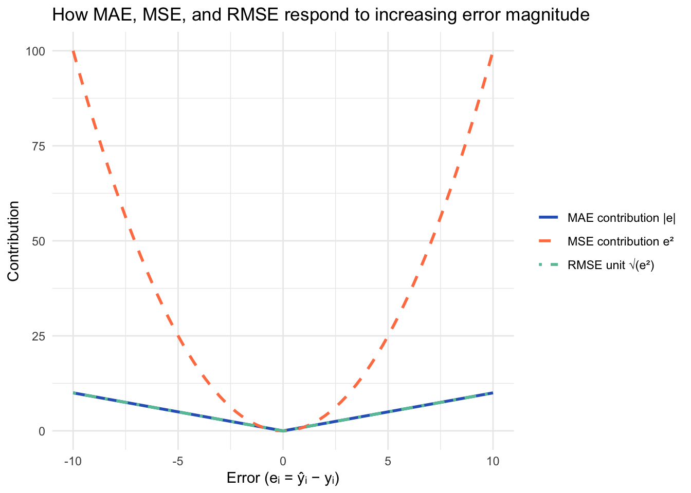
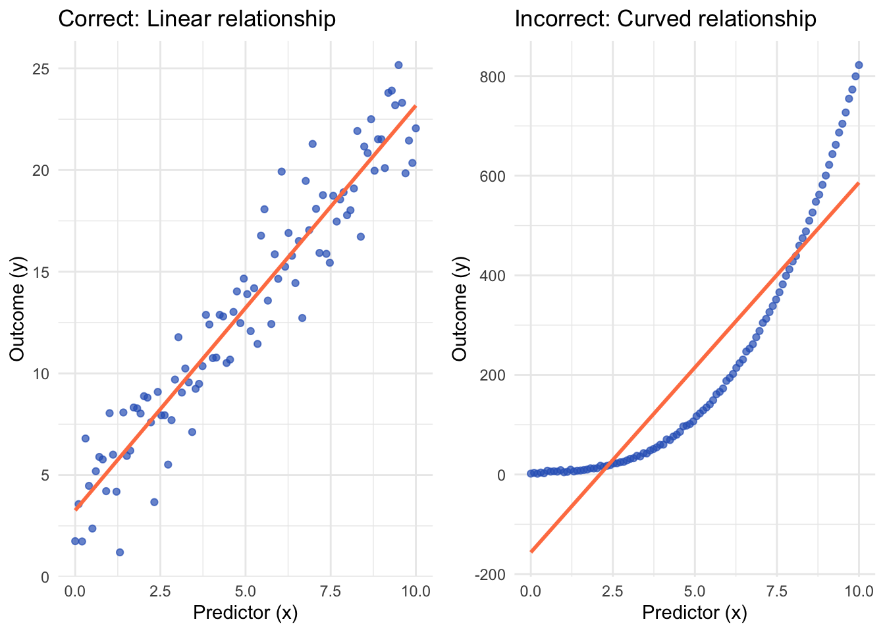
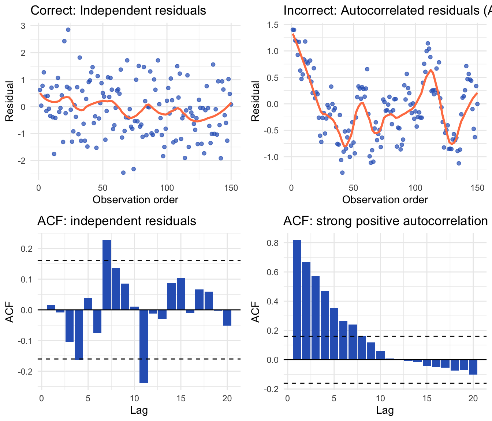
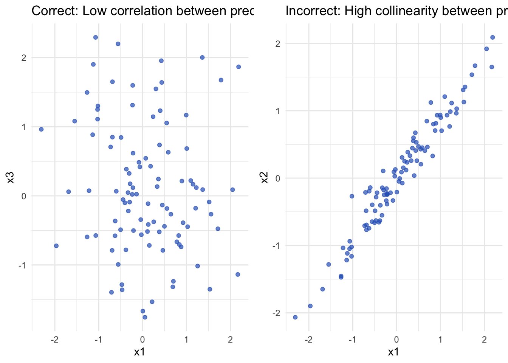
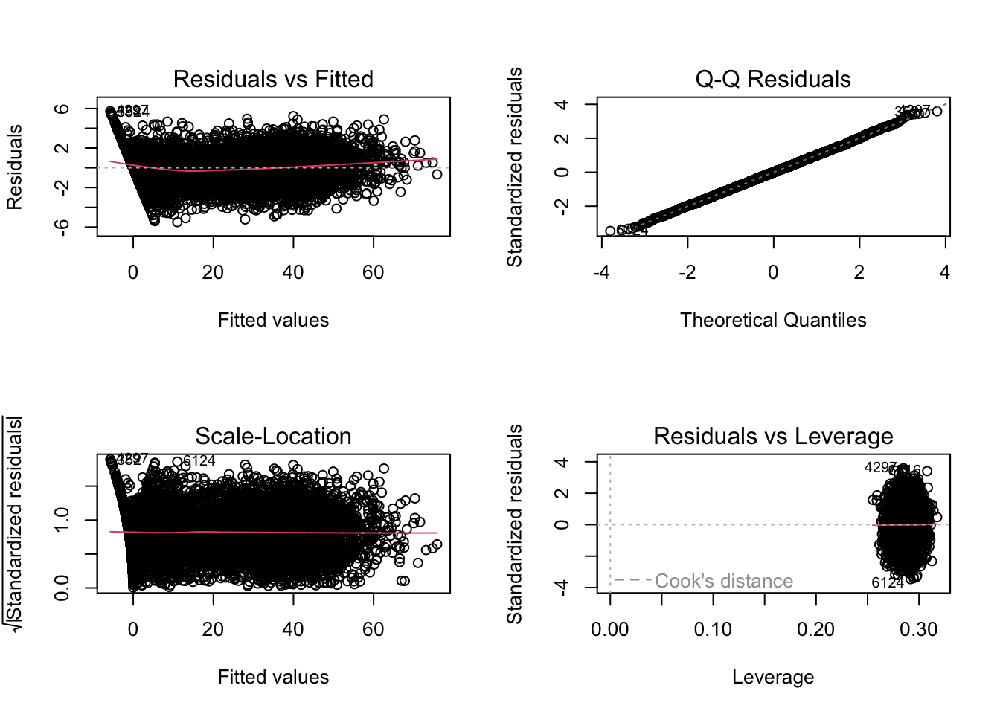
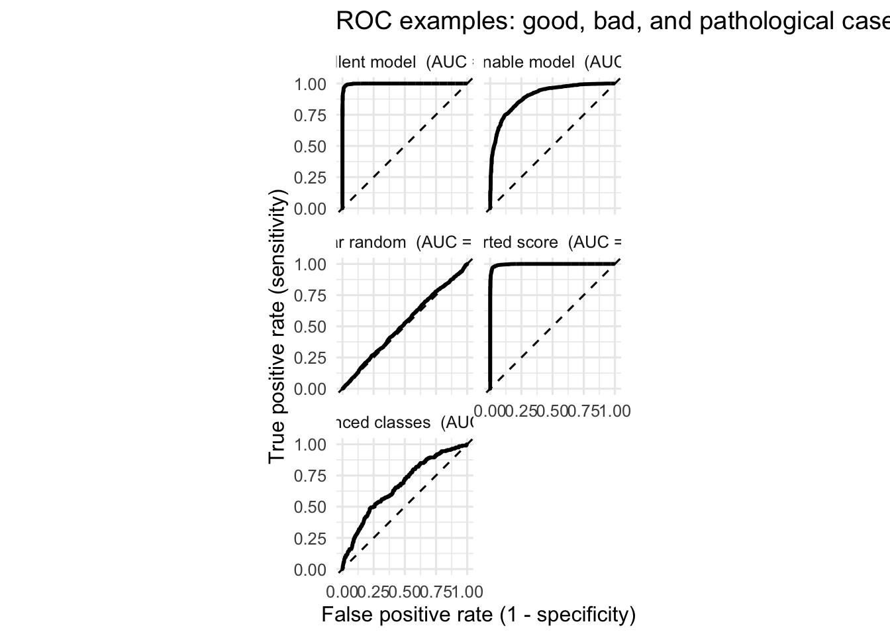
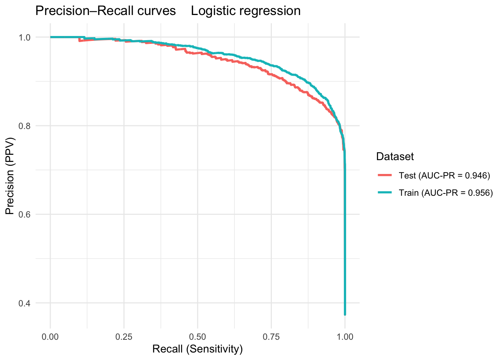
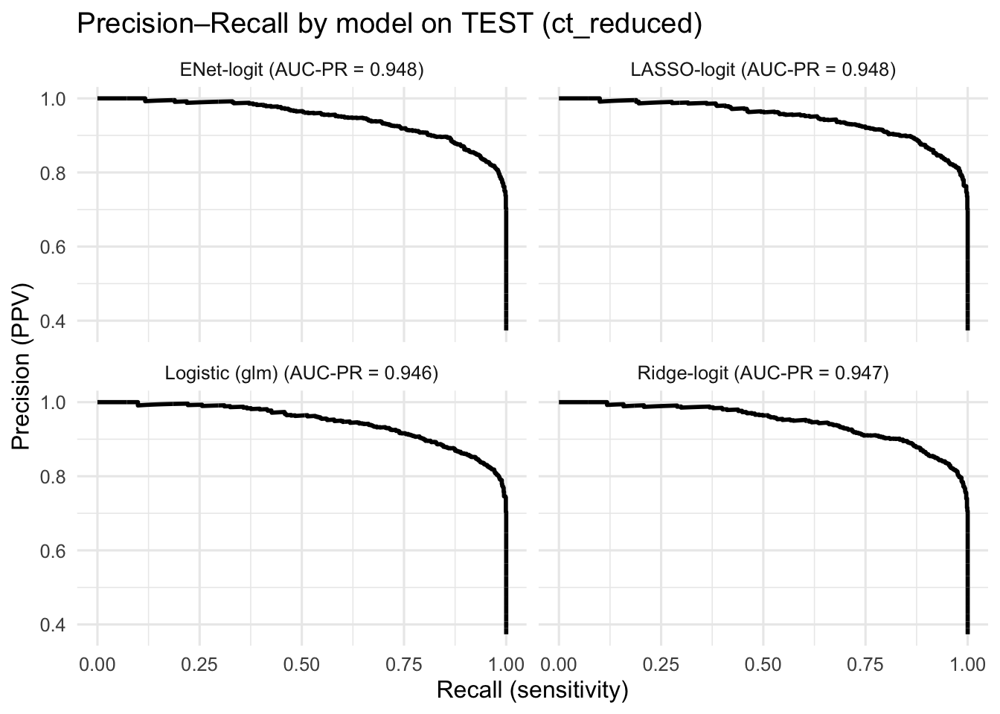

# Packages needed in this section
req_pkgs <- c(
"dplyr", # data wrangling
"ggplot2", # plotting
"tidyr", # tidying
"readr", # read/write csv
"tibble", # tibbles/printing
"gridExtra", # simple plot grids
"emmeans", # adjusted means / contrasts
"effsize", # effect sizes (Cohen's d, Cliff's delta)
"DataExplorer" ,#for missingness
"glmnet",
"lmtest" ,# for checking the
"pROC"
)
# Install any that are missing
to_install <- setdiff(req_pkgs, rownames(installed.packages()))
if (length(to_install) > 0) {
install.packages(to_install, dependencies = TRUE)
}
# Load all (silently)
invisible(lapply(req_pkgs, require, character.only = TRUE))2 Supervised Learning: Regression tasks
2.1 Setting up R
Run this code in your R studio to make sure you have all the packages required installed!
2.2 Recall
In the introduction to AI section we learnt that models are representations that provide information for evidence based decisions. We also learnt that for each machine learning task we may have different models that use different learning algorithms, their performance needs to be evaluated. Comparison between such models is better performed via metrics. We also learnt the importance of cross validation to avoid variance, bias and over-fitting.
In this chapter with a motivational example we will start with the first kind of supervised learning technique, in which the models will learn from the relation between continuous or binary labels and explanatory features, this kind of task is named regression.
The introductory chapter defined a generic representation of a model using an equation:
\[Y=f(x1,x2,...,xn)+error\] Where Y is attribute considered as label or response and x’s are the explanatory features and error is due to random process os measure errors usually notate as \(\epsilon\)
In this chapter we will give attention to a series of models in which this mathematical function f can be defined as:
\[Y= \mu + w1 * x1 +.... wn *xn+ \epsilon \tag{2.1}\] Once all \(w_i\)s are raised to the power of 1 we say this model is linear on the parameters or simply linear. \(\mu\) and \(w_i\)s are named parameters which we can estimate using different algorithms. The \(w_is\) will be weighting the importance of feature \(x_i\) when explaining Y.
In this chapter we will cover three main classes of models and respective algorithms to determine the parameters as follows:
- linear regression which parameters are estimated by least squares (which use the great idea of minimizing the errors between the real values and the predicted values)
and two models that consider the notion of regularization for avoiding model complexity (using an idea of shrinkage - defined later)
- lasso regression, estimated via Least Absolute Shrinkage and Selection Operator (LASSO) and L1 regularization
- Ridge regresion estimated via L2 norm.
The idea of Lasso and Ridge regression is making the values of \(w_i\)s smaller as possible (ridge) or zero (lasso) for the least important features.
Once we will be covering regression tasks we will also address the logistic regression model that is useful when we want to model a binary response variable Y= 0 or 1 using explanatory features.
After running a machine learning method and estimating the parameters, also named weights, we can rewrite it as:
\[\hat{Y}= \hat{\mu} + \hat{w_1}* x1 +....+\hat{w_n} *xn\] The values with a hat are the estimatives for each parameter an assume values depending on the model fitted. The \(\hat{Y}\) is named predicted value. It is the value returned by the modell fitted for a given set of explanatory features multiplied by the parameters estimated. We will further see the importance of this value for estimating measures of error and model performance.
Before seeing the details about regression models we will start by describing a particular case in which they will be applied.
2.3 Motivational context : chemotherapy clinical trial (focus on variables and practical interpretation)
As a motivational example we will use a simulated randomized clinical trial (1:1) ,a typical kind of experiment conducted to determine efficacy of drugs, in our case a chemoterapeutic one, including only patients with tumors.
Half of the patients receive chemotherapy (chemo), and the other half do not (no_chemo). The practical goal is to evaluate whether patients treated with chemotherapy show greater tumor reduction, and to understand how gene expression and clinical characteristics influence this response.
2.3.1 What is measured (and how to interpret each variable)
Unit of analysis: patients. We have 10000 thousand patients.
Treatment - treatment (factor: no_chemo, chemo)
Represents whether the patient received the chemotherapy.
In regression models, the coefficient for chemo directly quantifies the average difference in tumor reduction compared with no_chemo.
Dose - dose_intensity (continuous, ~0 for no_chemo and 0.8–1.1 for chemo)
Measures how strong the chemotherapy was for treated patients.
A positive regression coefficient means that higher dose intensity is associated with greater tumor shrinkage.
Outcomes - baseline_tumor_mm (continuous, mm): tumor size before treatment
- post_tumor_mm (continuous, mm): tumor size after treatment
- response_percent (continuous, 0–100): percentage of tumor shrinkage,
calculated as 100 × (baseline − post) / baseline
→ Higher values mean better therapeutic response.
- high_response (binary, 0/1): equal to 1 if response_percent ≥ 30 (similar to RECIST clinical criteria) Eisenhauer et al. (2009).
→ Used in logistic regression to model the probability of a strong response.
The RECIST (Response Evaluation Criteria in Solid Tumors) Eisenhauer et al. (2009) are standardized, internationally accepted criteria used to assess tumor response to treatment in clinical trials. Developed by an international collaboration between the EORTC, NCI (U.S.), and NCIC (Canada), RECIST provides quantitative guidelines for measuring changes in tumor size using imaging (typically CT or MRI). Under RECIST version 1.1 (2009), tumor response is classified as: Complete Response (CR): Disappearance of all target lesions. Partial Response (PR): ≥30% decrease in the sum of the diameters of target lesions (relative to baseline). Progressive Disease (PD): ≥20% increase in the sum of diameters (plus an absolute increase of ≥5 mm) or appearance of new lesions. Stable Disease (SD): Neither sufficient shrinkage nor sufficient increase to qualify as PR or PD.
Clinical profile - patient_age (continuous, years): older age may slightly reduce treatment effect.
- tumor_grade (factor: G1, G2, G3): aggressiveness of the tumor.
More aggressive tumors may respond more strongly because of higher proliferation rates.
- performance_score (ordinal, 0–2): functional status (ECOG-like scale).
Higher scores indicate poorer condition and typically lower treatment benefit due to toxicity or fragility.
Gene expression (omics) - gene_01 … gene_20000 (continuous, log2-CPM normalized)
Represent quantitative gene expression levels.
Some genes were simulated as causal (directly affecting response),
others as correlated (co-expressed with causal ones),
and the rest as noise.
The above example will be considered the reality for which we want to create a model representation. In penalized models (LASSO or Ridge), we expect the causal and correlated genes to receive higher weights (non-zero coefficients), while noisy ones will shrink toward zero.
2.3.2 Experimental objectives and practical questions
- Main question: Do patients treated with chemotherapy (
chemo) show higher average tumor shrinkage than those who do not (no_chemo)?
- Clinical modulators: Do age, tumor grade, or performance score modify this effect?
- Molecular biomarkers: Which genes are associated with treatment response?
- Predictive modeling: Given a patient’s clinical and molecular profile, how well can we predict their tumor reduction and probability of high response?
2.4 Reading the dataset into our environment
Lets read the dataset in our R studio and check its structure of the first 15 columns
trial_ct <- readRDS("~/att_ai_ml/data/trial_ct_chemo_cont.rds")
str(trial_ct[, 1:15]) # peek'data.frame': 10000 obs. of 15 variables:
$ patient_id : chr "P001" "P002" "P003" "P004" ...
$ treatment : Factor w/ 2 levels "no_chemo","chemo": 2 1 1 1 2 2 1 2 1 2 ...
$ dose_intensity : num 1.08 0 0 0 1.01 ...
$ patient_age : num 81 61 81 74 41 74 22 61 26 22 ...
$ tumor_grade : Factor w/ 3 levels "G1","G2","G3": 2 2 3 2 2 2 1 2 3 2 ...
$ performance_score: int 1 1 1 0 1 1 2 0 1 0 ...
$ baseline_tumor_mm: num 52.2 43.3 43.2 63.8 54.2 44.9 51.5 95.1 69.5 54.7 ...
$ post_tumor_mm : num 25.8 43.3 43.2 61.2 33.6 37 51.5 60.4 69.5 29.8 ...
$ response_percent : num 50.6 0 0 4.2 38 17.5 0 36.5 0 45.6 ...
$ high_response : int 1 0 0 0 1 0 0 1 0 1 ...
$ gene_01 : num 11.01 9.26 10.09 8.99 9.01 ...
$ gene_02 : num 9.31 7.79 8.95 7.8 8.33 ...
$ gene_03 : num 9.51 8.02 9.45 7.78 8.23 ...
$ gene_04 : num 10.27 9.16 9.42 8.87 9.03 ...
$ gene_05 : num 7.31 8.14 7.83 7.49 7.23 ...str(trial_ct)'data.frame': 10000 obs. of 2010 variables:
$ patient_id : chr "P001" "P002" "P003" "P004" ...
$ treatment : Factor w/ 2 levels "no_chemo","chemo": 2 1 1 1 2 2 1 2 1 2 ...
$ dose_intensity : num 1.08 0 0 0 1.01 ...
$ patient_age : num 81 61 81 74 41 74 22 61 26 22 ...
$ tumor_grade : Factor w/ 3 levels "G1","G2","G3": 2 2 3 2 2 2 1 2 3 2 ...
$ performance_score: int 1 1 1 0 1 1 2 0 1 0 ...
$ baseline_tumor_mm: num 52.2 43.3 43.2 63.8 54.2 44.9 51.5 95.1 69.5 54.7 ...
$ post_tumor_mm : num 25.8 43.3 43.2 61.2 33.6 37 51.5 60.4 69.5 29.8 ...
$ response_percent : num 50.6 0 0 4.2 38 17.5 0 36.5 0 45.6 ...
$ high_response : int 1 0 0 0 1 0 0 1 0 1 ...
$ gene_01 : num 11.01 9.26 10.09 8.99 9.01 ...
$ gene_02 : num 9.31 7.79 8.95 7.8 8.33 ...
$ gene_03 : num 9.51 8.02 9.45 7.78 8.23 ...
$ gene_04 : num 10.27 9.16 9.42 8.87 9.03 ...
$ gene_05 : num 7.31 8.14 7.83 7.49 7.23 ...
$ gene_06 : num 7.44 7.22 7.41 6.28 7.01 ...
$ gene_07 : num 9.13 9.24 8.96 8.23 7.96 ...
$ gene_08 : num 1.722 -1.205 -1.211 -0.574 0.824 ...
$ gene_09 : num 7.23 4.41 6.01 4.67 5.36 ...
$ gene_10 : num 6.94 6.52 6.99 5.92 5.97 ...
$ gene_11 : num 7.21 7 7.23 6.81 7.42 ...
$ gene_12 : num 5.81 6.78 6.54 7.85 7.44 ...
$ gene_13 : num 9.33 8.92 8.48 9.07 9.69 ...
$ gene_14 : num 1.344 -1.212 -0.934 -0.639 1.07 ...
$ gene_15 : num 8.79 9.1 8.95 9.33 9.22 ...
$ gene_16 : num 6.79 7.36 7.23 7.74 7.94 ...
$ gene_17 : num 7.31 5.58 6.11 5.7 6.14 ...
$ gene_18 : num 7.56 7.82 7.98 7.97 7.66 ...
$ gene_19 : num 1.504 -1.567 -1.099 -1.003 0.616 ...
$ gene_20 : num 10.1 10.7 10.8 11.2 11.1 ...
$ gene_21 : num 9.42 8.45 8.92 7.9 9.4 ...
$ gene_22 : num 9.68 11.12 10.65 9.82 10.17 ...
$ gene_23 : num 8.95 10.27 9.73 9.33 9.36 ...
$ gene_24 : num 10.34 9.81 9.98 9.37 9.3 ...
$ gene_25 : num 10.37 10 9.73 10.4 10.87 ...
$ gene_26 : num 6.69 6.77 6.88 7.61 7.91 ...
$ gene_27 : num 7.91 5.81 6.16 6.38 6.81 ...
$ gene_28 : num 7.91 8.34 7.18 7.39 6.98 ...
$ gene_29 : num 8.34 8.97 8.75 8.97 8.69 ...
$ gene_30 : num 7.89 7.97 7.81 7.64 7.98 ...
$ gene_31 : num 12.4 11.5 12.5 11 12 ...
$ gene_32 : num 8.8 8.66 9.46 8.28 8.03 ...
$ gene_33 : num 6.61 6.65 6.79 7.05 7.23 ...
$ gene_34 : num 8.43 8.08 8.87 7.6 7.54 ...
$ gene_35 : num 8.34 8.18 8.06 8.79 8.8 ...
$ gene_36 : num 7.84 8.3 8.2 7.82 8.05 ...
$ gene_37 : num 8.43 9.52 9.07 8.28 8.88 ...
$ gene_38 : num 8.78 9.98 9.22 9.27 8.98 ...
$ gene_39 : num 6.87 6.19 6.3 5.78 6.11 ...
$ gene_40 : num 11.1 10.7 10.8 10.7 11.4 ...
$ gene_41 : num 9.21 7.15 8.6 5.2 5.9 ...
$ gene_42 : num 9 6.96 7.74 7.21 7.66 ...
$ gene_43 : num 7.39 6.07 6.79 6.7 6.46 ...
$ gene_44 : num 9.48 8.83 8.49 8.74 10.09 ...
$ gene_45 : num 4.78 7.44 7.09 6.89 7.13 ...
$ gene_46 : num 7.84 9.75 8.41 9.7 9.39 ...
$ gene_47 : num 9.17 8.53 8.83 7.74 7.46 ...
$ gene_48 : num 8.42 8.41 8.95 7.38 7.06 ...
$ gene_49 : num 7.18 7.25 7.45 6.99 6.94 ...
$ gene_50 : num 7.93 7.18 7.6 7.37 7.6 ...
$ gene_51 : num 5.43 5.76 5.72 6.2 5.69 ...
$ gene_52 : num 6.68 6.6 6.35 7.35 6.98 ...
$ gene_53 : num 8.27 7.81 8.48 7.42 8.01 ...
$ gene_54 : num 7.73 7.84 7.61 9.21 8.28 ...
$ gene_55 : num 7.65 7.43 7.61 6.57 7.12 ...
$ gene_56 : num 9.82 11.92 10.52 12.27 11.62 ...
$ gene_57 : num 9.97 9.99 9.66 10.4 10.09 ...
$ gene_58 : num 7.87 5.55 6.54 4.29 4.83 ...
$ gene_59 : num 9.06 10.87 10.13 9.65 9.71 ...
$ gene_60 : num 6.87 7.84 8.28 7.42 7.47 ...
$ gene_61 : num 6.91 5.87 6.01 6.52 6.67 ...
$ gene_62 : num 8.68 8.81 8.92 9.36 8.77 ...
$ gene_63 : num 5.12 4.97 5.13 4.89 5.17 ...
$ gene_64 : num 10.66 8.63 9.46 8.34 8.96 ...
$ gene_65 : num 8.93 8.82 8.35 8.07 7.76 ...
$ gene_66 : num 9.62 8.71 8.94 8.74 8.56 ...
$ gene_67 : num 6.77 6.92 6.94 6.64 6.64 ...
$ gene_68 : num 9.85 8.11 9.24 8.39 8.94 ...
$ gene_69 : num 6.43 6.69 6.63 5.66 5.91 ...
$ gene_70 : num 7.23 6.44 7.12 6.02 6.42 ...
$ gene_71 : num 8.98 8.83 8.74 9.01 8.74 ...
$ gene_72 : num 9.38 8.19 8.7 8.47 8.84 ...
$ gene_73 : num 8.33 8.69 9.39 9.03 7.84 ...
$ gene_74 : num 8.87 10.39 10.11 9.81 9.93 ...
$ gene_75 : num 9.42 7.99 8.5 7.07 7.32 ...
$ gene_76 : num 8.83 8.06 8.09 7.54 7.83 ...
$ gene_77 : num 5.13 6.01 5.6 5.5 5.26 ...
$ gene_78 : num 6.5 7.77 7.28 6.79 6.29 ...
$ gene_79 : num 7.19 7.43 8.1 8.45 8.17 ...
$ gene_80 : num 7.84 7.63 7.82 8.5 8.5 ...
$ gene_81 : num 7.53 8.77 7.86 7.33 7.27 ...
$ gene_82 : num 10.29 6.95 8.81 7.3 8.14 ...
$ gene_83 : num 7.21 6.96 6.79 6.25 6.76 ...
$ gene_84 : num 8.53 8.66 8.53 7.92 8.42 ...
$ gene_85 : num 8.72 7.01 7.91 7.4 7.52 ...
$ gene_86 : num 9.76 7.75 8.29 9.36 9.29 ...
$ gene_87 : num 7.36 6.59 6.37 7.87 7.61 ...
$ gene_88 : num 8.1 8.88 8.67 9.1 9.03 ...
$ gene_89 : num 9.56 7.91 8.79 7.01 7.39 ...
[list output truncated]2.4.1 Notes for analysis
An important first stage in any statistical or machine learning modelling is the exploratory analysis in which we use simple metrics of visualization tools to have a first glimpse of the dataset we have in hands. In this sense, we can use figures like histograms or boxplots that represent the distribution of continuous features and scatterplots that show the relationship between two continuous variables
For example, we can produce, Boxplots of response_percent by treatment, histograms of response_percent, and scatter plots of baseline_tumor_mm vs post_tumor_mm.
In summary, in our clinical trial example, response_percent is the main continuous endpoint, high_response is its clinically relevant binary version, treatment and dose_intensity define the intervention, and clinical plus gene variables explain for whom and how much the chemotherapy works.
Our objective in this chapter will be:
For linear regression:
Report estimated coefficients, standard errors, t-values, and p-values for each predictor.
Evaluate model fit using metrics such as R² and adjusted R² to assess explained variability.
Check residual diagnostics (normality, homoscedasticity, and influential points) to verify model assumptions.
Plot fitted vs observed values and residual vs fitted to visually inspect model adequacy.
- Report confidence intervals for main effects (e.g., treatment effect, dose effect).
- Summarize predicted responses or marginal means by treatment group for interpretation and communication of clinical impact.
- For LASSO, Ridge and Elastic Net: use cross-validation to select the regularization parameter λ, and compare their stability and sparsity.
- In your report, distinguish clearly between:
- Average treatment effects (
chemovsno_chemo)
- Modulating effects (genes, age, grade, performance, dose intensity)
- Average treatment effects (
- For logistic regression: report odds ratios with 95% CIs and evaluate ROC/AUC and calibration.
We start usually by understanding if we have any bits of the data that may be missing. Using this code below we can see that our dataset is indeed complete. We will dedicate a section on missing data in future chapters. In the case of our motivational example we have a complete dataset.
type_map <- tibble::tibble(
variable = names(trial_ct),
class = sapply(trial_ct, \(x) paste(class(x), collapse = "/")),
n_missing = sapply(trial_ct, \(x) sum(is.na(x))),
pct_missing = round(100 * sapply(trial_ct, \(x) mean(is.na(x))), 2),
n_unique = sapply(trial_ct, \(x) dplyr::n_distinct(x)),
example = sapply(trial_ct, \(x) paste(utils::head(unique(x), 3), collapse = ", "))
)
type_map %>% arrange(desc(class))# A tibble: 2,010 × 6
variable class n_missing pct_missing n_unique example
<chr> <chr> <int> <dbl> <int> <chr>
1 dose_intensity numeric 0 0 302 1.085, 0, 1.007
2 patient_age numeric 0 0 61 81, 61, 74
3 baseline_tumor_mm numeric 0 0 912 52.2, 43.3, 43.2
4 post_tumor_mm numeric 0 0 869 25.8, 43.3, 43.2
5 response_percent numeric 0 0 665 50.6, 0, 4.2
6 gene_01 numeric 0 0 10000 11.0132382528657, 9…
7 gene_02 numeric 0 0 10000 9.31355524977464, 7…
8 gene_03 numeric 0 0 10000 9.51020822690023, 8…
9 gene_04 numeric 0 0 10000 10.272629360758, 9.…
10 gene_05 numeric 0 0 10000 7.30636755315514, 8…
# ℹ 2,000 more rowsp + scale_y_continuous(limits = c(0, NA), expand = expansion(mult = c(0, .05)))
An important first stage in any statistical or machine learning modelling is the exploratory analysis in which we use simple metrics of visualization tools to have a first glimpse of the dataset we have in hands. In this sense, we can use figures like histograms or boxplots that represent the distribution of continuous features and scatterplots that show the relationship between two continuous variables
For example, we can produce, Boxplots of response_percent by treatment, histograms of response_percent, and scatter plots of baseline_tumor_mm vs post_tumor_mm.
Below we have the codes to produce some exploratory graphics
p1 <- ggplot(trial_ct, aes(response_percent)) + geom_histogram(bins = 30) +
labs(x = "Response percent", y = "Count")
p2 <- ggplot(trial_ct, aes(factor(high_response))) + geom_bar() +
labs(x = "High response (≥30%)", y = "Count")
p3 <- ggplot(trial_ct, aes(baseline_tumor_mm)) + geom_histogram(bins = 30) +
labs(x = "Baseline tumor (mm)", y = "Count")
p4 <- ggplot(trial_ct, aes(patient_age)) + geom_histogram(bins = 30) +
labs(x = "Age (years)", y = "Count")
gridExtra::grid.arrange(p1, p2, p3, p4, ncol = 2)
ggplot(trial_ct, aes(baseline_tumor_mm, post_tumor_mm, color = treatment)) +
geom_point(alpha = 0.6) +
geom_abline(slope = 1, intercept = 0, linetype = 2) +
labs(x = "Baseline (mm)", y = "Post (mm)", color = "Treatment")
ggplot(trial_ct, aes(treatment, response_percent)) +
geom_boxplot() +
labs(x = "Treatment", y = "Response percent")
ggplot(trial_ct, aes(treatment, response_percent)) +
geom_boxplot(outlier.shape = NA, width = 0.6) +
stat_summary(fun = mean, geom = "point", shape = 23, size = 3, fill = "white") +
stat_summary(fun.data = mean_cl_normal, geom = "errorbar", width = 0.15) +
labs(x = "Treatment", y = "Response percent")
We can also create some summaries of the dataset. For example we can summarise the reponse_percent feature in each of the groups.
trial_ct %>%
group_by(treatment) %>%
summarise(
n = n(),
mean = mean(response_percent),
sd = sd(response_percent),
median = median(response_percent),
q1 = quantile(response_percent, 0.25),
q3 = quantile(response_percent, 0.75)
)# A tibble: 2 × 7
treatment n mean sd median q1 q3
<fct> <int> <dbl> <dbl> <dbl> <dbl> <dbl>
1 no_chemo 5078 4.83 6.81 0.8 0 8.2
2 chemo 4922 37.6 10.9 37.3 30.2 44.8We can also perform the calculation of some correlations to determine associations between features. Plotting this correlations is also important helping us to discuss the level of association between features. The code below calculates the correlation between the level of expression of each gene and the response_percent feature.
gene_cols <- grep("^gene_", names(trial_ct), value = TRUE)
cors <- sapply(gene_cols, function(g) {
suppressWarnings(cor(trial_ct[[g]], trial_ct$response_percent, use = "pairwise.complete.obs"))
})
top10_names <- names(sort(abs(cors), decreasing = TRUE))[1:10]
top10_df <- tibble::tibble(
gene = top10_names,
cor = unname(cors[top10_names])
) %>%
dplyr::mutate(gene = reorder(gene, abs(cor)))
ggplot(top10_df, aes(x = gene, y = cor, fill = cor > 0)) +
geom_col() +
coord_flip() +
guides(fill = "none") +
labs(x = "Gene", y = "Correlation with response_percent",
title = "Top 10 genes by absolute correlation (signed)")
2.5 Metrics for model comparison
Before comparing regression methods, it is important to understand the metrics used to evaluate how well a model predicts continuous or binary outcomes. Each metric captures a different aspect of model performance: accuracy, precision, or calibration and helps interpret how reliable a model’s predictions are in practice.
We will focus on following main evaluation metrics commonly used for regression and classification.
2.5.1 Error
The error (also called the residual) for each observation is:
\[ e_i = \hat{y}_i - y_i \]
Where: (y_i) is the observed (true) value for subject (i); (_i) is the model prediction; (e_i) is the individual prediction error. Positive error = overestimation; negative error = underestimation.
Example:
suppressPackageStartupMessages(library(ggplot2))
set.seed(1)
df_err <- data.frame(
patient = 1:8,
observed = c(20, 35, 40, 60, 75, 85, 95, 100),
predicted = c(18, 38, 37, 65, 71, 89, 92, 102)
)
df_err$error <- df_err$predicted - df_err$observed
ggplot(df_err, aes(x = patient)) +
geom_segment(aes(y = observed, yend = predicted, xend = patient), linewidth = 0.7) +
geom_point(aes(y = observed), size = 2) +
geom_point(aes(y = predicted), size = 2, shape = 17) +
labs(x = "Patient", y = "Response (%)",
title = "Prediction error (eᵢ = ŷᵢ − yᵢ): observed vs predicted")
2.5.2 Mean Absolute Error (MAE)
The mean absolute error summarizes the average magnitude of errors, ignoring their sign:
\[ \mathrm{MAE} = \frac{1}{n}\sum_{i=1}^{n} |e_i| = \frac{1}{n}\sum_{i=1}^{n} |\hat{y}_i - y_i| \]
MAE gives equal weight to all errors and is less sensitive to outliers than MSE/RMSE.
Interpretation: if MAE = 4, predictions are, on average, 4 units away from the observed values (e.g., 4 percentage points of tumor reduction).
2.5.3 Mean Square Error (MSE)
The mean square error measures the average squared deviation:
\[ \mathrm{MSE} = \frac{1}{n}\sum_{i=1}^{n} (\hat{y}_i - y_i)^2 = \frac{1}{n}\sum_{i=1}^{n} e_i^2 \]
By squaring, large errors are penalized quadratically, making MSE more sensitive to occasional large misses useful when big mistakes are costly (for example, underestimating toxicity).
2.5.4 Root Mean Square Error (RMSE)
The root mean square error is the square root of MSE, returning to the original units of the outcome:
\[ \mathrm{RMSE} = \sqrt{\frac{1}{n}\sum_{i=1}^{n} (\hat{y}_i - y_i)^2} = \sqrt{\mathrm{MSE}} \]
RMSE can be read as the typical magnitude (standard deviation) of prediction errors; it penalizes large errors more than MAE but remains directly interpretable.
2.5.5 Compact comparison
| Metric | Formula | Penalizes large errors strongly? | Units | Practical meaning |
|---|---|---|---|---|
| Error | \((e_i = \hat{y}_i - y_i)\) | Outcome units | Direction and size of each residual | |
| MAE | \((\frac{1}{n}\sum\) | e_i | ) | No (linear) |
| MSE | \((\frac{1}{n}\sum e_i^2)\) | Yes (quadratic) | Squared units | Average squared deviation |
| RMSE | \((\sqrt{\frac{1}{n}\sum e_i^2})\) | Yes (quadratic) | Outcome units | Typical error size (√MSE) |
2.5.6 Visual comparison (how metrics respond to error size)
suppressPackageStartupMessages(library(ggplot2))
suppressPackageStartupMessages(library(dplyr))
suppressPackageStartupMessages(library(tidyr))
df_metrics <- data.frame(error = seq(-10, 10, by = 0.25)) |>
mutate(
abs_error = abs(error),
sq_error = error^2,
rmse_unit = sqrt(error^2) # same as abs(error), shown for relation to RMSE
) |>
pivot_longer(
cols = c(abs_error, sq_error, rmse_unit),
names_to = "metric", values_to = "value"
) |>
mutate(
# Ensure fixed factor level order so colors map correctly
metric = factor(metric, levels = c("abs_error", "sq_error", "rmse_unit"))
)
labs_map <- c(abs_error = "MAE contribution |e|",
sq_error = "MSE contribution e²",
rmse_unit = "RMSE unit √(e²)")
# Map colors by named vector to avoid level-order surprises
col_map <- c(
abs_error = "#2f63c0", # blue
sq_error = "#ff7f50", # orange/coral
rmse_unit = "#66c2a5" # green
)
ggplot(df_metrics, aes(x = error, y = value, color = metric, linetype = metric)) +
geom_line(linewidth = 1) +
scale_color_manual(values = col_map, breaks = names(labs_map), labels = labs_map) +
scale_linetype_manual(values = c(abs_error = "solid", sq_error = "dashed", rmse_unit = "dotdash"),
breaks = names(labs_map), labels = labs_map) +
labs(x = "Error (eᵢ = ŷᵢ − yᵢ)", y = "Contribution", color = NULL, linetype = NULL,
title = "How MAE, MSE, and RMSE respond to increasing error magnitude") +
theme_minimal()

2.5.7 Worked numeric example to illustrate how to calculate errors, mae, mse and rmse and to show them in a dataframe.
errors <- c(-5, 2, -3, 8, 1, -2, 4, -1)
mae <- mean(abs(errors))
mse <- mean(errors^2)
rmse <- sqrt(mse)
data.frame(Metric = c("MAE","MSE","RMSE"),
Value = c(mae, mse, rmse)) Metric Value
1 MAE 3.250000
2 MSE 15.500000
3 RMSE 3.9370042.5.8 Notes for analysis
- Use MAE when you want an intuitive average error magnitude, robust to outliers.
- Use RMSE when large errors must be penalized more heavily (and to keep units interpretable).
- Report both MAE and RMSE for a balanced view; and residual diagnostics (validity).
- Always compute metrics with cross-validation to estimate out-of-sample performance.
2.6 Fitting simple linear regression to our data
We will fit the following model for our motivational example
\[Y = w_0 + w_1 X_1 + w_2 X_2 + \ldots + w_p X_p + \varepsilon\]
That in our particular case will be:
\[ \text{response\_percent} = w_0 + w_1(\text{compound\_dose}) + w_2(\text{patient\_age}) + w_3(\text{disease\_type}) + w_4(\text{gene\_expression\_1}) + w_5(\text{gene\_expression\_2}) + \ldots + w_{2000}(\text{gene\_expression\_2000}) + \varepsilon \]
The response variable (outcome) is response_percent the continuous measure of how much the tumor shrank (efficacy minus toxicity). The explanatory variables (predictors) include everything else in the dataset (.) except: patient_id (just an identifier) high_response (the binary version of the same outcome)
So our explanatory variables include: Gene expression features (gene_expression_1 … gene_expression_20) Clinical variables (compound_dose, patient_age, disease_type, etc.)
2.6.1 Model assumptions for linear regression
When we fit a linear regression model, we make several assumptions about the relationship between the predictors (X’s) and the outcome (Y). These assumptions matter because they affect whether the estimated coefficients and statistical tests can be trusted.
plot_pair <- function(data_good, data_bad, xvar, yvar, title_good, title_bad, xlabel, ylabel) {
p1 <- ggplot(data_good, aes({{xvar}}, {{yvar}})) +
geom_point(alpha = 0.7, color = "#2f63c0") +
geom_smooth(method = "lm", se = FALSE, color = "#ff7f50") +
labs(title = paste("Correct:", title_good), x = xlabel, y = ylabel) +
theme_minimal()
p2 <- ggplot(data_bad, aes({{xvar}}, {{yvar}})) +
geom_point(alpha = 0.7, color = "#2f63c0") +
geom_smooth(method = "lm", se = FALSE, color = "#ff7f50") +
labs(title = paste("Incorrect:", title_bad), x = xlabel, y = ylabel) +
theme_minimal()
gridExtra::grid.arrange(p1, p2, ncol = 2)
}- Linearity The relationship between each predictor and the outcome is assumed to be linear (on the model’s scale). If the true relationship is curved or nonlinear, the model may systematically under- or over-predict. Check: residuals vs fitted values or vs individual predictors should look patternless (no curves).
`geom_smooth()` using formula = 'y ~ x'
`geom_smooth()` using formula = 'y ~ x'
- Independence of errors Residuals (errors) should be independent across observations. This is especially important for time series or clustered data (e.g., repeated measures, multi-center studies). Violation: autocorrelation or clustering inflates apparent precision.

- Homoscedasticity (constant variance) The spread of residuals should be roughly constant across fitted values. If residuals fan out as predictions increase, that’s heteroskedasticity. Check: residuals vs fitted plot where spread should be similar across the range. Fixes: transform the outcome, use weighted least squares, or robust (HC) standard errors.
`geom_smooth()` using formula = 'y ~ x'
`geom_smooth()` using formula = 'y ~ x'
- Normality of residuals Residuals should be approximately normally distributed around zero. This mainly underpins valid p-values and confidence intervals (less critical for pure prediction). Check: Q–Q plot or histogram of standardized residuals.

- No multicollinearity Predictors should not be highly correlated with each other. Severe collinearity makes individual coefficient estimates unstable and hard to interpret. Check: Variance Inflation Factor (VIF); values > 5 (or > 10) suggest issues.

- No influential outliers A few extreme points should not unduly determine the fit. Check: leverage and Cook’s distance; large Cook’s D indicates influential observations worth investigation.
`geom_smooth()` using formula = 'y ~ x'
`geom_smooth()` using formula = 'y ~ x'
When these assumptions are reasonably met, Ordinary Least Squares (OLS) yields unbiased, efficient estimates and meaningful inference about how predictors relate to the response. In practice, diagnostic plots and simple tests help verify whether the model behaves well for the data at hand.
We know use the fabulous property of R to create functions and we will create three functions one to calculate mae and rmse which will be performed simultaneosly by the eval_perform function.
# ---- 0) Metrics (MAE and RMSE) ----
mae <- function(y, yhat) mean(abs(y - yhat))
rmse <- function(y, yhat) sqrt(mean((y - yhat)^2))
# ---- evaluation function (MAE and RMSE) ----
eval_perf <- function(y_true, y_pred) {
tibble(
MAE = mae(y_true, y_pred),
RMSE = rmse(y_true, y_pred)
)
}
# alias to avoid mistyping
eval_perform <- eval_perfAfter that we split the data set into training (70%) of the data and test (30%) of the data.
set.seed(42)
# ---- 1) Train/Test split (70/30) ----
n <- nrow(trial_ct)
ix <- sample.int(n, size = floor(0.7 * n))
train <- trial_ct[ix, , drop = FALSE]
test <- trial_ct[-ix, , drop = FALSE]Then we can remove some unecessary columns from the dataset.
# ---- 2) Remove columns that must NOT enter the model ----
# (ID and the binary endpoint; keeps the supervised task as a pure regression)
drop_cols <- intersect(names(train), c("patient_id", "high_response", "baseline_tumor_mm", "post_tumor_mm"))
train_nopii <- dplyr::select(train, -dplyr::all_of(drop_cols))
test_nopii <- dplyr::select(test, -dplyr::all_of(drop_cols))After that we write some code that will inform to R the formula we want to consider for this model.
# Common formula for OLS (and to derive terms/dummies for glmnet)
f_ols <- response_percent ~ .The function for fitting a linear regression in R is `lm` to which we indicate the formula of the model and the training dataset to be used for construction of the model. When we write ols_tmp <- lm(f_ols, data = train_nopii) we are fitting a temporary linear model on the trainingset only to let R learn the exact design it should use: which predictors are in the model, how factors are encoded (their levels and the chosen reference), and the precise structure of any interactions or transformations. Extracting ols_terms <- terms(ols_tmp) gives us that blueprint of the design matrix.
Later, when we build matrices with model.matrix(ols_terms, data = train_nopii) and model.matrix(ols_terms, data = test_nopii), both training and test data are transformed with the same blueprint. This prevents issues like “factor has new levels in test,” mismatched dummy columns, or different column ordering problems that would otherwise break penalized models (e.g., glmnet) or yield inconsistent predictions. In short: we lock in the training design so the test set is encoded identically, guaranteeing compatible inputs for all models.
These steps are important because we will use the same training and testing datasets for running Lasso and Ridge Regression later using the glmnet package.
# ---- 3) Capture TRAIN terms to ensure identical dummies in TEST ----
# (fit a temporary OLS only to extract terms & factor levels)
ols_tmp <- lm(f_ols, data = train_nopii)
ols_terms <- terms(ols_tmp)# Consistent design matrices for glmnet (no intercept column)
X_train <- model.matrix(ols_terms, data = train_nopii)[, -1, drop = FALSE]
X_test <- model.matrix(ols_terms, data = test_nopii)[, -1, drop = FALSE]
y_train <- train_nopii$response_percent
y_test <- test_nopii$response_percentNo we proceed with the Ordinary Least Square regression analysis of our motivational example.
In this block of code we are fitting and evaluating our baseline Ordinary Least Squares (OLS) regression model. The command mod_ols <- lm(f_ols, data = train_nopii) fits a linear regression model using only the training data. The formula f_ols expresses that we want to predict response_percent, our continuous measure of tumor shrinkage, using all available explanatory variables except for patient_id and high_response. These two variables are removed because one is simply an identifier and the other is a binary version of the same outcome, which would leak information into the model. The resulting object mod_ols contains the estimated coefficients and fitted values for the training set.
Next, pred_ols_train <- predict(mod_ols, newdata = train_nopii) generates predictions for the same training data used to fit the model. These are the in-sample predictions. They allow us to evaluate how well the model fits the data it has already seen and to compute basic performance metrics such as the Mean Absolute Error (MAE) and the Root Mean Square Error (RMSE). They are also used to inspect diagnostic plots that reveal potential problems such as nonlinearity, heteroskedasticity, or outliers.
Finally, pred_ols_test <- predict(mod_ols, newdata = test_nopii) applies the trained OLS model to the independent test dataset, which was not used during model fitting. These predictions are used to assess the model’s ability to generalize to new data. Comparing the errors on the training and test sets helps us detect whether the model is overfitting (performing much better on training data than on unseen data) or underfitting. Because we ensured earlier that categorical variables and factor levels are defined consistently between training and test sets, the prediction step runs smoothly without level-mismatch errors. In summary, this three-step process fits the baseline OLS model, obtains fitted and predicted values, and provides the foundation for fair comparison with the regularized models (LASSO and Ridge) that will be trained using the same data split.
# ---- 4) OLS (uses data.frame; glmnet uses X/y) ----
mod_ols <- lm(f_ols, data = train_nopii)
pred_ols_train <- predict(mod_ols, newdata = train_nopii)
pred_ols_test <- predict(mod_ols, newdata = test_nopii)In this block we prepare and run standard OLS diagnostics to check whether the linear model assumptions look reasonable. First, we load helper packages: ggplot2 and dplyr for plotting and data handling, lmtest for tests like Breusch–Pagan and Durbin–Watson, sandwich for robust variance estimators, and car for tools such as variance inflation factors, component-plus-residual plots, and outlier checks. Then par(mfrow = c(2, 2)) tells base R to arrange four plots in a 2 by 2 grid. The call plot(mod_ols) draws the default diagnostic panel for a fitted lm object: Residuals vs Fitted to look for nonlinearity or heteroskedasticity, Normal Q-Q to assess approximate normality of residuals, Scale–Location to check whether residual spread is roughly constant across fitted values, and Residuals vs Leverage with Cook’s distances to flag influential observations. Together these plots provide a quick visual screening of model adequacy before we proceed to formal tests or alternative specifications.
#| label: ols-assumptions
#| message: false
#| warning: false
suppressPackageStartupMessages({
library(ggplot2)
library(dplyr)
library(lmtest) # bptest(), dwtest()
library(sandwich) # robust (HC) variance estimators
library(car) # vif(), crPlots(), outlierTest()
})
# --- 1) Quick base-R diagnostic panel (residuals, QQ, Scale-Location, Residuals vs Leverage)
op <- par(mfrow = c(2, 2))
plot(mod_ols)
Residuals vs Fitted
This plot examines whether the residuals are centered around zero and whether there is any systematic pattern. The points here are scattered roughly around the horizontal line with no obvious curve, suggesting that the relationship between predictors and outcome is reasonably linear. There is a slight spread increase for larger fitted values, but it does not seem severe. Overall, the assumption of linearity and constant variance appears acceptable.
Normal Q–Q
The Q–Q plot compares the standardized residuals to what would be expected if they followed a normal distribution. Most points lie very close to the diagonal reference line, except for a few at the extreme tails. This indicates that the residuals are approximately normal, with only minor deviations that are unlikely to affect inference materially.
Scale–Location (Spread–Location)
This plot checks whether the variance of residuals is constant across the range of fitted values (homoskedasticity). The red line is nearly flat, and the spread of the points is fairly uniform across the x-axis. There is no strong funnel shape or trend, so the homoskedasticity assumption is reasonably satisfied.
Residuals vs Leverage
This plot identifies influential cases observations that have both high leverage (unusual predictor combinations) and large residuals (poorly fitted). Most points lie within the Cook’s distance contours, indicating that no single case is exerting excessive influence on the fitted model. A few observations (such as those labeled 800 or 1920) have higher leverage, but they do not appear to distort the overall fit.
Overall interpretation
Taken together, these diagnostics suggest that the OLS model fits the data adequately. The linearity, normality, and constant-variance assumptions hold reasonably well, and there are no major outliers or influential points. Minor departures at the extremes are typical in real data and do not undermine the general validity of the model.
The next block of code is a compact toolkit to inspect, interpret, and summarize your fitted OLS model from several complementary angles. It starts with summary(mod_ols), which is the classic regression report. You get one row per coefficient with its estimate, standard error, t statistic, and p value, plus model-level diagnostics such as the residual standard error, R², adjusted R², and the F test for the null that all slopes are zero. Read this first to see direction and magnitude of effects and whether they are statistically distinguishable from zero after adjusting for the other variables in the model.
Next it calls anova(mod_ols), which produces a Type I (sequential) ANOVA table. Here, sums of squares and p values are computed in the order that predictors enter the model. This is useful when there is a natural hierarchy or pre-specified entry order, but results can change if you reorder columns. If you need hypothesis tests that adjust for all other terms regardless of order (especially with factors and interactions), you would use car::Anova(mod_ols, type = 3) instead, which provides Type III tests.
Then it builds a tidy coefficient table with broom::tidy(mod_ols, conf.int = TRUE). This converts the model output into a clean data frame that includes coefficient estimates, standard errors, test statistics, p values, and 95% confidence intervals. The code then arranges rows by p value and prints everything, which is convenient for scanning the most and least significant terms in a reproducible, table-friendly format.
The next step creates a quick ranking of “importance” by absolute t statistic. It removes the intercept, computes abs_t = |t|, sorts descending, and shows the top terms with their estimates, standard errors, test statistics, p values, and confidence intervals. This does not replace more formal variable-importance methods, but it is a fast way to see which coefficients have the strongest signal relative to their uncertainty within this linear specification.
Finally, broom::glance(mod_ols) provides a one-row summary of overall fit metrics. You get R² and adjusted R² (explanatory power with and without a penalty for model size), sigma (residual standard deviation), the model F statistic and its p value, and information criteria such as AIC and BIC for comparing alternative models on a goodness-of-fit versus complexity trade-off.
Taken together, these outputs let you check individual effects with uncertainty, evaluate sequential or fully adjusted hypothesis tests, order terms by signal-to-noise, and assess global model quality, all in tidy objects that can be reported or plotted downstream.
In the context of ANOVA, significance tells us whether a factor or variable has a real, measurable effect on the outcome, rather than the observed differences being just due to random chance.
The p-value is the probability of seeing a difference (or a larger one) in the data if, in reality, the factor had no effect at all that is, if the null hypothesis were true.
When a p-value is very small (typically below 0.05), it means such a difference would be very unlikely to appear by random chance, so we have evidence to reject the null hypothesis and conclude that the variable probably does influence the outcome.
In simple terms, ANOVA uses p-values as a decision criterion:
A small p-value (below 0.05) → the group differences or predictor effects are statistically significant.
A large p-value (above 0.05) → the observed differences could easily occur by chance, so we do not have strong evidence of a real effect.
Significance does not measure the size or importance of the effect it only measures how confident we are that an effect exists at all.
In a regression model, the parameters (often called coefficients or betas) quantify how much the response variable changes when a given predictor changes, while holding all other predictors constant.
Each parameter represents the direction and magnitude of that predictor’s influence on the outcome.
A positive coefficient means that as the predictor increases, the response tends to increase as well.
A negative coefficient means that higher values of the predictor are associated with lower response values.
A coefficient close to zero suggests that the variable has little or no linear impact on the outcome, once the other predictors are accounted for.
The absolute value of the coefficient reflects how strong the relationship is (how sensitive the response is to changes in that variable), but the units of measurement matter: one unit of a gene-expression score does not mean the same as one year of age, so direct comparisons of raw coefficients can be misleading.
When variables are standardized (converted to the same scale), larger absolute coefficients indicate stronger effects.
Statistical tests (t values and p values) assess whether each coefficient is significantly different from zero. A small p value suggests that the estimated effect is unlikely to be due to random noise, providing evidence that this predictor truly contributes to explaining variation in the response.
Following we have the code to generat the items above for our mod_ols object. We will avoid printing them here because each of the items would have thousands of elements… This brings to our minds the complexities of informing outputs of linear models with thousand of explanatories mantained by the model.
The next chunck of code evaluates how well the OLS model predicts the tumor response in both the training and test datasets, using two standard regression error metrics: MAE (Mean Absolute Error) and RMSE (Root Mean Square Error).
The first two lines extract the true outcome values the observed tumor shrinkage percentages (response_percent) from the training and testing subsets. The next two blocks call the function eval_perf(), which calculates MAE and RMSE by comparing the true values (y_train or y_test) to the model’s predictions (pred_ols_train or pred_ols_test).
Recalling:
MAE represents the average absolute difference between predicted and observed values it tells how far off the predictions are, on average, in the same units as the outcome (percentage points of tumor reduction).
RMSE is similar but gives more weight to large errors, making it more sensitive to occasional poor predictions.
The results are stored in small tibbles and then combined into one table with the model name (“OLS”) and dataset origin (“Train” or “Test”).
# --- Evaluate OLS with MAE and RMSE (using eval_perf) ---
# y vectors (true values)
y_train <- train_nopii$response_percent
y_test <- test_nopii$response_percent
perf_ols_train <- eval_perf(y_train, pred_ols_train) |>
dplyr::mutate(Model = "OLS", Dataset = "Train")
perf_ols_test <- eval_perf(y_test, pred_ols_test) |>
dplyr::mutate(Model = "OLS", Dataset = "Test")
# Compact table
dplyr::bind_rows(perf_ols_train, perf_ols_test)# A tibble: 2 × 4
MAE RMSE Model Dataset
<dbl> <dbl> <chr> <chr>
1 1.27 1.59 OLS Train
2 1.83 2.28 OLS Test The model fits the training data quite closely the average prediction error is about 1.3 percentage points. When applied to unseen data (the test set), the errors increase moderately to around 1.8–2.3 points.
This comparison is crucial because it shows generalization performance how well the model performs on new data that were not used for training.
The training performance tells you how well the model explains patterns already seen during fitting.
The testing performance reveals how well those learned relationships extend to new, unseen patients.
If the test errors are only slightly higher than the training errors, as in your case, it suggests a good model that generalizes reasonably well. If test errors were much larger, it would indicate overfitting the model memorized the training data instead of learning the general structure. Conversely, if both errors were high, it would point to underfitting, meaning the model is too simple to capture important relationships.
In summary, checking both training and test performance allows you to balance fit quality and predictive reliability, ensuring that the regression model is not only accurate on known data but also trustworthy for future predictions.
As a general guideline, whenever you a see a work quoting a linear regression try to understand if the cross validation technique was applied. You will be amazed on how many works do not bother about these details.
2.7 Some words on regularization
We discussed in a previous section that the parameters of the model are important for interpretation because they tell us how each variable contributes to explaining the outcome. However, in practice, when we move from small, well-controlled models to modern biomedical or omics data, we often face a very different scenario: instead of a few predictors such as age, dose, or tumor grade, we may have hundreds or thousands of gene-expression features. In this context, interpreting the individual coefficients becomes nearly impossible. Many of them will be correlated with one another, some may carry redundant information, and others may simply represent random noise. Traditional linear regression tends to overfit in such high-dimensional settings it tries to give every variable a non-zero weight, which leads to unstable and unreliable estimates that generalize poorly to new data.
To address this, machine-learning methods introduce the idea of regularization, also called shrinkage. The key idea is to constrain or penalize the size of the coefficients so that the model prefers simpler explanations that still fit the data well. Regularization discourages the algorithm from assigning large weights to predictors that do not truly improve predictive accuracy.
Two common approaches are Ridge regression and LASSO regression. Ridge regression applies an L2 penalty, which shrinks all coefficients toward zero but rarely eliminates them completely; it is particularly effective when many predictors have small, distributed effects. LASSO regression, in contrast, uses an L1 penalty, which can shrink some coefficients exactly to zero, performing variable selection at the same time as estimation. This means that LASSO can automatically identify a smaller subset of genes or variables that carry most of the predictive signal, making the model both simpler and easier to interpret.### Ordinary Least Squares Sum of Squares
2.7.1 Ordinary Least Squares Sum of Squares
The residual sum of squares (RSS) minimized by Ordinary Least Squares (OLS) is:
\[ \text{RSS} = \sum_{i=1}^{n} (y_i - \hat{y}_i)^2 = \sum_{i=1}^{n} (y_i - \mathbf{x}_i^\top \boldsymbol{\beta})^2 \]
OLS estimates the parameters ( ) that minimize this quadratic error term, without any regularization.
2.7.2 Ridge Regression (L2 regularization)
Ridge regression introduces a penalty proportional to the L2 norm of the coefficients:
\[ L_{\text{ridge}}(\boldsymbol{\beta}) = \sum_{i=1}^{n} (y_i - \mathbf{x}_i^\top \boldsymbol{\beta})^2 + \lambda \sum_{j=1}^{p} \beta_j^2 \]
where ( ) controls the penalty strength.
The L2 term shrinks all coefficients toward zero but does not set them exactly to zero.
It is especially useful when predictors are highly correlated.
2.7.3 Lasso Regression (L1 regularization)
Lasso regression adds a penalty proportional to the L1 norm of the coefficients:
\[ L_{\text{lasso}}(\boldsymbol{\beta}) = \sum_{i=1}^{n} (y_i - \mathbf{x}_i^\top \boldsymbol{\beta})^2 + \lambda \sum_{j=1}^{p} |\beta_j| \]
The L1 term encourages sparsity, meaning that some coefficients are driven exactly to zero, effectively performing variable selection.
2.7.4 Elastic Net (Combination of L1 and L2)
The Elastic Net combines both Ridge (L2) and Lasso (L1) penalties:
\[ L_{\text{elastic-net}}(\boldsymbol{\beta}) = \sum_{i=1}^{n} (y_i - \mathbf{x}_i^\top \boldsymbol{\beta})^2 + \lambda \left[ \alpha \sum_{j=1}^{p} |\beta_j| + (1 - \alpha) \sum_{j=1}^{p} \beta_j^2 \right] \]
where ( 0 ) controls the mix between L1 and L2 regularization:
- ( = 1 ) → Lasso
- ( = 0 ) → Ridge
- ( 0 < < 1 ) → Elastic Net
Elastic Net is particularly effective when there are many correlated predictors: it keeps Ridge’s stability while still allowing Lasso-style variable selection.
In the next section we will see how to perform these three types of regression: LASSO, ridge regression, and elastic net.
2.8 Hyperparameters
In \(Y=f\left(x_1, x_2, \ldots, x_n\right)+\) error, the parameters are the quantities inside the function \(f\) that the algorithm learns from the data to make \(f\) fit well (e.g., the \(b\) s in a linear model
A hyperparameter is a setting that controls how f is learned, not something learned directly from the data by the usual fitting step. Hyperparameters define the shape/complexity of the function class you allow and how aggressively you search within it. They live outside f, but they constrain and guide the learning of f.
Hyperparameters are configuration choices that control the learning process and the capacity of the model class used to approximate \(f(\cdot)\). They are not learned from the training loss directly; instead, they are selected (e.g., via cross-validation) to achieve good generalization, helping \(f\) capture the signal in \(Y\) without fitting the random error.
In supervised learning we seek to approximate an unknown function \(f(\cdot)\) that links explanatory features \(x_1, x_2, \ldots, x_n\) to a response variable \(Y\) :
\[ Y=f\left(x_1, x_2, \ldots, x_n\right)+\varepsilon, \]
where \(\varepsilon\) captures random noise and unmeasured influences. When \(f(\cdot)\) is assumed to be linear, the model becomes
\[ \hat{Y}=w_0+\beta_1 x_1+\cdots+w_p x_p, \]
and the learning task consists of estimating the coefficients \(w_j\) that minimize prediction error. These coefficients are the model parameters-they are learned directly from the data.
However, in modern regression we often introduce an additional layer of control: hyperparameters, which determine how the coefficients are estimated and how much flexibility the model is allowed to have. Hyperparameters live outside the function \(f(\cdot)\); they are not part of the fitted equation but instead regulate the learning process.
OLS and the absence of hyperparameters Ordinary Least Squares (OLS) minimizes the Residual Sum of Squares (RSS):
\[ \mathrm{RSS}=\sum_{i=1}^n\left(y_i-\hat{y}_i\right)^2 . \]
The solution for \(\beta\) has a closed analytical form and depends only on the data. Because there is no external control over model complexity, OLS has no hyperparameters. Its flexibility is entirely determined by the number of predictors in the model.
While OLS is unbiased and efficient under ideal conditions, it becomes unstable when predictors are highly correlated or when \(p\) (number of variables) is large relative to \(n\).
To improve generalization, we introduce regularization-penalties that shrink coefficients toward zero and prevent overfitting.
Ridge, Lasso, and Elastic Net: controlling complexity with penalties Regularized regression modifies the OLS loss by adding a penalty term that constrains the magnitude of the coefficients.
The resulting objective function is
\[ \operatorname{RSS}_{\text {penalized }}=\sum_{i=1}^n\left(y_i-\hat{y}_i\right)^2+\lambda P(\boldsymbol{\beta}), \]
where \(P(\boldsymbol{\beta})\) defines the type of penalty and \(\lambda>0\) is a hyperparameter that controls its strength.
| Model | Penalty term ( P() ) | Main hyperparameters | Interpretation |
|---|---|---|---|
| Ridge | \(( \sum_j \beta_j^2 )\) (L2) | \(( \lambda )\) | Shrinks coefficients toward zero smoothly; keeps all variables. |
| Lasso | \(( \sum_j |\beta_j| )\) (L1) | \(( \lambda )\) | Shrinks some coefficients exactly to zero → automatic variable selection. |
| Elastic Net | \(( (1-\alpha)\sum_j \beta_j^2/2 + \alpha\sum_j |\beta_j|)\) | \(( \lambda, \alpha )\) | Combines both effects; balances stability (Ridge) and sparsity (Lasso). |
Understanding \(\lambda\) : the bias-variance control knob The hyperparameter \(\lambda\) regulates how strongly the model is penalized: - Small \(\lambda \rightarrow\) minimal penalty, coefficients close to OLS estimates.
Low bias, high variance (risk of overfitting). - Large \(\lambda \rightarrow\) heavy penalty, coefficients shrink strongly.
Higher bias, lower variance (risk of underfitting). Tuning \(\lambda\) therefore manages the bias-variance trade-off, shaping the smoothness and generalization capacity of the learned function \(f(\cdot)\).
Tuning and selection Unlike \(\beta\), hyperparameters are not optimized by minimizing training error. If we simply fitted the model for the smallest training loss, \(\lambda\) would always shrink toward zero (i.e., revert to OLS). Instead, hyperparameters are chosen using cross-validation, evaluating predictive error on unseen folds of the data.
The value of \(\lambda\) (and \(\alpha\) for Elastic Net) that minimizes cross-validated error-or is within one standard error of the minimum (the 1-SE rule)-is selected as optimal.
After choosing the hyperparameters, the model is re-trained on the full training set to estimate the final coefficients.
Conceptual summary - Parameters ( \(w_j\) ) define the learned relationship \(f(\cdot)\). - Hyperparameters ( \(\lambda, \alpha\) ) define how the relationship is learned-controlling model flexibility and generalization. - OLS has no hyperparameters; Ridge, Lasso, and Elastic Net introduce \(\lambda\) (and possibly \(\alpha\) ) to regularize the model. - Choosing good hyperparameters ensures \(f(X)\) captures the true signal in \(Y\) rather than noise in \(\varepsilon\)
2.9 Fitting LASSO Regression
The next block of code uses the glmnet package to fit a LASSO regression and to choose its penalty strength by cross-validation. The call to cv.glmnet(X_train, y_train, alpha = 1, nfolds = 10) runs a ten-fold cross-validation loop over a grid of lambda values with the L1 penalty, which defines the LASSO. For each lambda the algorithm fits the model on nine folds and evaluates prediction error on the remaining fold, then averages the error across folds. glmnet standardizes predictors internally by default, which is important so that the penalty treats variables on the same footing regardless of their scale.
From this cross-validation object we extract lambda.min, the lambda that achieved the smallest mean cross-validated error. We then refit the model on the full training set with glmnet(X_train, y_train, alpha = 1, lambda = cv_lasso$lambda.min). This produces a single LASSO model whose coefficients have been shrunk toward zero. Many uninformative coefficients are exactly zero, which performs built-in variable selection and improves interpretability while controlling variance.
Finally, we obtain predicted values for both the training and the test sets with predict(mod_lasso, newx = X_train)and predict(mod_lasso, newx = X_test). These predictions allow us to compute performance metrics such as MAE and RMSE on data used to fit the model and on held-out data. Evaluating both is useful because the training metrics show how well the model can fit observed samples, while the test metrics indicate how well the model generalizes to new patients. Some analysts also report lambda.1se, which is the largest lambda within one standard error of the minimum error. That choice usually yields a sparser model with similar predictive accuracy and can be attractive when parsimony is a priority.
The next three chunks’ outputs show the fitted LASSO regression model and how it performs on the training and testing data. Unlike ordinary least squares, which gives every variable a non-zero coefficient, LASSO includes a penalty that forces many coefficients exactly to zero. The result is a simpler model that keeps only the most informative predictors.
The table of coefficients lists all variables that remain active after regularization. The first line, the intercept (27.99), represents the baseline predicted tumor response (in percentage points) when all other predictors are at their reference or zero levels. The next few coefficients correspond to clinical factors. For instance, treatmentchemo = 3.11 means that, on average and holding other variables constant, patients who received chemotherapy are predicted to have about three percentage points higher tumor shrinkage than those who did not. The coefficient for dose_intensity = 3.34 indicates that stronger chemotherapy doses are associated with greater reductions in tumor size. Age has a small positive coefficient, suggesting a very mild increase in response with age, while the negative sign for performance_score shows that patients with worse functional status tend to respond less effectively to treatment. Tumor grade also has a clear effect, with higher grades showing larger coefficients and therefore stronger responses.
After the clinical covariates, the list continues with gene expression variables. Only a fraction of the hundreds of available genes appear, meaning that the LASSO has automatically selected those with the most predictive value. For example, gene_08, gene_14, and gene_19 have relatively large positive coefficients (around five), identifying them as strong predictors of greater tumor reduction. In contrast, genes such as gene_05 or gene_1778 have large negative coefficients, implying that higher expression of these genes is associated with poorer therapeutic response. The many small coefficients near zero reflect genes with weak or marginal contributions that the model nonetheless retained under the chosen regularization strength. In situation where the number of features to be considered is giant LASSO returns a smaller reasonable amount of variables compared with the original number, making interpretation of the model more facilitated.
The last section of the output shows model performance using the eval_perf() function. The MAE (mean absolute error) and RMSE (root mean square error) values quantify how far, on average, the predictions are from the true tumor responses. The training errors are MAE = 1.49 and RMSE = 1.87, while the test errors are MAE = 1.57 and RMSE = 1.96. The similarity of these values suggests that the model generalizes well: it fits the training data closely but not excessively and maintains similar predictive accuracy on unseen test patients.
Overall, this LASSO fit yields a parsimonious model that identifies a handful of relevant clinical variables and a limited subset of genes that together explain much of the variation in tumor response. The regularization penalty has successfully balanced interpretability and predictive performance by shrinking or eliminating irrelevant coefficients while preserving the key biological and clinical signals in the data.
# ---- 5) LASSO (alpha = 1) with CV to choose lambda ----
# Note: glmnet standardizes features by default (standardize = TRUE).
cv_lasso <- cv.glmnet(X_train, y_train, alpha = 1, nfolds = 10)
mod_lasso <- glmnet(X_train, y_train, alpha = 1, lambda = cv_lasso$lambda.min)
pred_lasso_train <- as.numeric(predict(mod_lasso, newx = X_train))
pred_lasso_test <- as.numeric(predict(mod_lasso, newx = X_test))# Nonzero coefficients selected by LASSO
coef_lasso <- coef(mod_lasso)
nz <- which(coef_lasso != 0)
as.matrix(coef_lasso[nz, , drop = FALSE]) s0
(Intercept) 27.9894094231
treatmentchemo 3.1094150609
dose_intensity 3.3438592381
patient_age 0.0132882299
tumor_gradeG2 0.1316015652
tumor_gradeG3 0.5547952038
performance_score -0.2943083530
gene_01 0.8494564076
gene_05 -2.7310539064
gene_08 5.1436742116
gene_12 0.4288133459
gene_14 5.1013463595
gene_19 5.1746627223
gene_27 0.0180460908
gene_30 -0.0863467996
gene_32 -0.0361982838
gene_104 0.0211677652
gene_116 -0.0218406711
gene_117 -0.0052744538
gene_123 0.0056347167
gene_146 0.0498361359
gene_157 -0.0279668435
gene_165 -0.0080882163
gene_187 0.0222580351
gene_210 -0.0036941301
gene_221 0.0096723727
gene_225 0.0644057360
gene_242 0.0684388670
gene_253 -0.0077187155
gene_287 0.0498245130
gene_311 -0.0424858360
gene_359 -0.0232784490
gene_373 -0.0568150918
gene_416 0.0008864799
gene_459 0.0443358981
gene_484 0.0190060279
gene_490 0.0172107152
gene_503 -0.0079158529
gene_514 -0.0248283328
gene_535 -0.0577584654
gene_537 -0.0072821908
gene_550 0.0375150155
gene_576 -0.0704458018
gene_600 0.0158202468
gene_605 0.0196117982
gene_627 0.0103392261
gene_648 -0.0034662864
gene_669 0.0008621344
gene_670 0.0132388638
gene_696 -0.0155218791
gene_720 -0.0435232964
gene_757 0.0366479160
gene_760 -0.0310746046
gene_795 -0.0038151634
gene_804 0.0071026491
gene_840 0.0162446672
gene_864 -0.0570875844
gene_874 0.0108188945
gene_877 -0.0084290925
gene_911 0.0303575087
gene_916 -0.0135076583
gene_956 -0.0240584781
gene_969 -0.0054693674
gene_976 -0.0569288581
gene_980 0.0015706121
gene_1013 0.0291775413
gene_1024 0.0417414081
gene_1051 0.0308411643
gene_1059 -0.0030128212
gene_1071 -0.0383864043
gene_1084 0.0129566818
gene_1096 -0.0226222064
gene_1117 0.0243128673
gene_1120 0.0600242242
gene_1137 -0.0634424258
gene_1150 -0.0576782902
gene_1161 0.0050430799
gene_1237 0.0121748732
gene_1241 0.1164865560
gene_1255 0.0025642628
gene_1265 -0.0059853938
gene_1292 -0.0114866186
gene_1306 0.0069838046
gene_1363 -0.0465489365
gene_1376 -0.0113973153
gene_1419 0.1117123380
gene_1421 0.0343775734
gene_1428 -0.1140875119
gene_1437 -0.0166104156
gene_1442 0.0553966751
gene_1476 -0.0179387369
gene_1490 -0.0272055274
gene_1506 0.1071247869
gene_1518 -0.0434573068
gene_1556 0.0845555983
gene_1564 -0.0539480912
gene_1602 -0.0595800034
gene_1610 -0.0390650740
gene_1678 0.0569013521
gene_1685 -0.0028281900
gene_1691 -0.0119213530
gene_1708 0.0561465041
gene_1737 0.0029350844
gene_1738 0.0040687069
gene_1746 0.0015397073
gene_1748 -0.0079077542
gene_1761 0.0616664687
gene_1763 0.0344047529
gene_1775 0.0004665486
gene_1778 -0.1198702861
gene_1846 -0.0227816308
gene_1858 -0.0464153923
gene_1871 -0.0011798398
gene_1892 0.0823542888
gene_1927 0.0532531012
gene_1976 -0.1120061133
gene_1994 0.0020424817# Compare errors with your eval_perf()
perf_lasso_train <- eval_perf(y_train, pred_lasso_train) |> dplyr::mutate(Model="LASSO", Dataset="Train")
perf_lasso_test <- eval_perf(y_test, pred_lasso_test) |> dplyr::mutate(Model="LASSO", Dataset="Test")
dplyr::bind_rows(perf_lasso_train, perf_lasso_test)# A tibble: 2 × 4
MAE RMSE Model Dataset
<dbl> <dbl> <chr> <chr>
1 1.49 1.87 LASSO Train
2 1.57 1.96 LASSO Test 2.10 Fitting Ridge Regression
In the following chunks of code we will implement a ridgre regression model.
The Ridge model is trained using cv.glmnet() with alpha = 0, which specifies the L2 penalty. The algorithm performs 10-fold cross-validation over a grid of possible penalty values (lambda) and identifies the one that minimizes the mean prediction error. The value of lambda.min = 1.83 is the penalty that achieved the lowest average cross-validation error, while lambda.1se = 2.01 corresponds to a slightly stronger penalty that still performs within one standard error of the minimum. The model is then refitted on the entire training dataset with this optimal lambda, and predictions are generated for both training and test sets.
The code then computes the Mean Absolute Error (MAE) and Root Mean Square Error (RMSE) for each model OLS, LASSO, and Ridge on both the training and test sets using the eval_perf() function. These metrics quantify how close the model’s predictions are to the observed tumor response. The Ridge model shows MAE = 1.43 and RMSE = 1.79 on the training data, and MAE = 1.77 and RMSE = 2.23 on the test data. Compared to OLS (MAE = 1.83, RMSE = 2.28 on the test set), Ridge performs slightly better, reducing both bias and variance without overfitting. Its performance is similar to that of LASSO but typically smoother, since Ridge keeps all variables in the model rather than setting some coefficients exactly to zero.
The Ridge model coefficients provide additional insight. In contrast to LASSO, which eliminates many predictors, Ridge keeps all coefficients non-zero (2,006 in this dataset) but shrinks them toward zero depending on their contribution strength. The list of the top fifteen coefficients shows that the variables with the strongest influence on tumor response are consistent with previous models: dose_intensity and treatmentchemo have the largest positive effects, indicating that higher doses and chemotherapy are associated with greater tumor shrinkage. Several genes such as gene_14, gene_19, and gene_08 also have strong positive associations, while gene_05 has a large negative coefficient, suggesting a detrimental effect on treatment response. Other predictors, such as tumor grade and performance score, have smaller but directionally meaningful coefficients that align with clinical expectations.
Overall, these results illustrate the essence of Ridge regularization: instead of discarding predictors as LASSO does, it shrinks all coefficients toward zero, reducing overfitting and stabilizing estimates when many correlated variables (such as thousands of gene expressions) are present. The outcome is a model that generalizes better than OLS, retains all variables but with moderated influence, and highlights which features exert the most consistent effects across the dataset.
# ---- 6) Ridge (alpha = 0) with CV ----
cv_ridge <- cv.glmnet(X_train, y_train, alpha = 0, nfolds = 10)
mod_ridge <- glmnet(X_train, y_train, alpha = 0, lambda = cv_ridge$lambda.min)
pred_ridge_train <- as.numeric(predict(mod_ridge, newx = X_train))
pred_ridge_test <- as.numeric(predict(mod_ridge, newx = X_test))# ---- Performance (MAE, RMSE) using eval_perform / eval_perf ----
perf_ridge_train <- eval_perform(y_train, pred_ridge_train) |>
dplyr::mutate(Model = "Ridge", Dataset = "Train")
perf_ridge_test <- eval_perform(y_test, pred_ridge_test) |>
dplyr::mutate(Model = "Ridge", Dataset = "Test")
dplyr::bind_rows(perf_ridge_train, perf_ridge_test)# A tibble: 2 × 4
MAE RMSE Model Dataset
<dbl> <dbl> <chr> <chr>
1 1.43 1.79 Ridge Train
2 1.77 2.23 Ridge Test # ---- Quick model “summary” for discussion ----
# Lambdas chosen by CV
cv_ridge$lambda.min[1] 1.82942cv_ridge$lambda.1se[1] 2.007787# Coefficients at lambda.min
ridge_coefs <- as.matrix(coef(mod_ridge))
ridge_coef_tbl <- tibble::tibble(
term = rownames(ridge_coefs),
estimate = as.numeric(ridge_coefs[, 1])
)
# How many non-zero coefficients (excluding intercept)
nnz <- ridge_coef_tbl |>
dplyr::filter(term != "(Intercept)", estimate != 0) |>
nrow()
nnz[1] 2006# Top coefficients by absolute magnitude (exclude intercept)
ridge_top <- ridge_coef_tbl |>
dplyr::filter(term != "(Intercept)") |>
dplyr::mutate(abs_est = abs(estimate)) |>
dplyr::arrange(dplyr::desc(abs_est)) |>
dplyr::slice(1:15)
## seeing the top 15 features regarding estimate
ridge_top# A tibble: 15 × 3
term estimate abs_est
<chr> <dbl> <dbl>
1 dose_intensity 5.28 5.28
2 treatmentchemo 5.03 5.03
3 gene_14 4.33 4.33
4 gene_19 4.30 4.30
5 gene_08 4.29 4.29
6 gene_05 -3.50 3.50
7 gene_01 0.983 0.983
8 tumor_gradeG3 0.949 0.949
9 gene_12 0.526 0.526
10 performance_score -0.517 0.517
11 tumor_gradeG2 0.283 0.283
12 gene_1419 0.269 0.269
13 gene_1506 0.233 0.233
14 gene_1976 -0.215 0.215
15 gene_907 -0.213 0.213# ---- 7) Elastic Net (tune alpha and lambda via CV) ----
suppressPackageStartupMessages({
library(glmnet)
library(dplyr)
library(tibble)
# assumes eval_perform() already defined and X_train, X_test, y_train, y_test exist
})
set.seed(42)
# Grid of alpha values (0=ridge, 1=lasso)
alpha_grid <- seq(0.05, 0.95, by = 0.05)
# For each alpha, run cv.glmnet to pick lambda; record CV error at lambda.min
cv_list <- lapply(alpha_grid, function(a) {
cv.glmnet(X_train, y_train, alpha = a, nfolds = 10)
})
cv_errors <- sapply(cv_list, function(cv) min(cv$cvm)) # lower is better
best_idx <- which.min(cv_errors)
best_alpha <- alpha_grid[best_idx]
best_cv <- cv_list[[best_idx]]
best_lambda_min <- best_cv$lambda.min
best_lambda_1se <- best_cv$lambda.1se
best_alpha[1] 0.15best_lambda_min[1] 0.1811088best_lambda_1se[1] 0.2883763# Fit final Elastic Net at best alpha/lambda
mod_enet <- glmnet(X_train, y_train, alpha = best_alpha, lambda = best_lambda_min)
# Predictions
pred_enet_train <- as.numeric(predict(mod_enet, newx = X_train))
pred_enet_test <- as.numeric(predict(mod_enet, newx = X_test))
# Performance
perf_enet_train <- eval_perform(y_train, pred_enet_train) |>
mutate(Model = "Elastic Net", Dataset = "Train", alpha = best_alpha, lambda = best_lambda_min)
perf_enet_test <- eval_perform(y_test, pred_enet_test) |>
mutate(Model = "Elastic Net", Dataset = "Test", alpha = best_alpha, lambda = best_lambda_min)
bind_rows(perf_enet_train, perf_enet_test)# A tibble: 2 × 6
MAE RMSE Model Dataset alpha lambda
<dbl> <dbl> <chr> <chr> <dbl> <dbl>
1 1.50 1.88 Elastic Net Train 0.15 0.181
2 1.57 1.95 Elastic Net Test 0.15 0.181# Coefficients summary
enet_coefs <- as.matrix(coef(mod_enet))
enet_coef_tbl <- tibble(
term = rownames(enet_coefs),
estimate = as.numeric(enet_coefs[, 1])
)
# Count non-zero (excluding intercept)
enet_nnz <- enet_coef_tbl |>
filter(term != "(Intercept)", estimate != 0) |>
nrow()
enet_nnz[1] 87# Top coefficients by absolute value (exclude intercept)
enet_top <- enet_coef_tbl |>
filter(term != "(Intercept)") |>
mutate(abs_est = abs(estimate)) |>
arrange(desc(abs_est)) |>
slice(1:20)
enet_top# A tibble: 20 × 3
term estimate abs_est
<chr> <dbl> <dbl>
1 gene_19 5.08 5.08
2 gene_08 5.01 5.01
3 gene_14 4.98 4.98
4 dose_intensity 3.54 3.54
5 treatmentchemo 3.49 3.49
6 gene_05 -2.92 2.92
7 gene_01 0.863 0.863
8 tumor_gradeG3 0.606 0.606
9 gene_12 0.456 0.456
10 performance_score -0.320 0.320
11 tumor_gradeG2 0.141 0.141
12 gene_1976 -0.110 0.110
13 gene_1419 0.107 0.107
14 gene_1241 0.106 0.106
15 gene_1428 -0.0990 0.0990
16 gene_1778 -0.0947 0.0947
17 gene_1506 0.0947 0.0947
18 gene_1892 0.0793 0.0793
19 gene_1556 0.0705 0.0705
20 gene_30 -0.0676 0.06762.11 Elastic Net
The next chunk fits an Elastic Net regression and tunes its two key hyperparameters using cross-validation, then evaluates how well it predicts on unseen data and inspects the model’s coefficients.
First, it defines a grid of candidate mixing parameters alpha from 0.05 to 0.95. Elastic Net blends Ridge and LASSO: alpha equal to 0 behaves like Ridge, alpha equal to 1 behaves like LASSO, values in between trade off between the two penalties. For each alpha in the grid, cv.glmnet() runs 10-fold cross-validation over a sequence of lambda values and records the mean cross-validated error. The code then picks the alpha that achieves the lowest error across its lambda path, identifies the corresponding best lambda at the minimum error (lambda.min) and also records lambda.1se which is a slightly stronger penalty within one standard error of the minimum. In your run, the best alpha is 0.15, with lambda.minabout 0.181 and lambda.1se about 0.288. This indicates that a model closer to Ridge than to LASSO gave the best cross-validated performance on this dataset.
With the best alpha and lambda.min fixed, the code refits a final Elastic Net model on the full training matrix and generates predictions for both training and test sets. It then computes MAE and RMSE via eval_perform(). Your results show MAE 1.50 and RMSE 1.88 on training, and MAE 1.57 and RMSE 1.95 on test. The similarity between train and test errors suggests good generalization with limited overfitting. Test performance is competitive with or slightly better than the individual Ridge and LASSO models you fitted earlier, which is a common outcome when Elastic Net can borrow strengths from both penalties in the presence of many correlated predictors.
Finally, the code examines the coefficient vector. It converts the sparse coefficient matrix to a tibble, counts how many coefficients are non-zero excluding the intercept, and ranks predictors by absolute magnitude. You obtained 87 non-zero coefficients, which is far sparser than Ridge and far denser than a very aggressive LASSO, reflecting the balance enforced by alpha 0.15. The top effects are biologically and clinically interpretable: gene_19, gene_08, and gene_14 have the largest positive coefficients, dose_intensity and treatmentchemo are also strongly positive, while gene_05 is strongly negative, and performance_score is moderately negative. Tumor grade indicators and several additional genes appear with smaller but non-zero effects. This pattern is what Elastic Net is designed to produce in high-dimensional settings with correlated features: it keeps groups of correlated predictors, shrinks them toward zero to control variance, and still performs variable selection to improve interpretability and prediction.
# ---- 7) Elastic Net (tune alpha and lambda via CV) ----
suppressPackageStartupMessages({
library(glmnet)
library(dplyr)
library(tibble)
# assumes eval_perform() already defined and X_train, X_test, y_train, y_test exist
})
set.seed(42)
# Grid of alpha values (0=ridge, 1=lasso)
alpha_grid <- seq(0.05, 0.95, by = 0.05)
# For each alpha, run cv.glmnet to pick lambda; record CV error at lambda.min
cv_list <- lapply(alpha_grid, function(a) {
cv.glmnet(X_train, y_train, alpha = a, nfolds = 10)
})
cv_errors <- sapply(cv_list, function(cv) min(cv$cvm)) # lower is better
best_idx <- which.min(cv_errors)
best_alpha <- alpha_grid[best_idx]
best_cv <- cv_list[[best_idx]]
best_lambda_min <- best_cv$lambda.min
best_lambda_1se <- best_cv$lambda.1se
best_alpha[1] 0.15best_lambda_min[1] 0.1811088best_lambda_1se[1] 0.2883763# Fit final Elastic Net at best alpha/lambda
mod_enet <- glmnet(X_train, y_train, alpha = best_alpha, lambda = best_lambda_min)
# Predictions
pred_enet_train <- as.numeric(predict(mod_enet, newx = X_train))
pred_enet_test <- as.numeric(predict(mod_enet, newx = X_test))
# Performance
perf_enet_train <- eval_perform(y_train, pred_enet_train) |>
mutate(Model = "Elastic Net", Dataset = "Train", alpha = best_alpha, lambda = best_lambda_min)
perf_enet_test <- eval_perform(y_test, pred_enet_test) |>
mutate(Model = "Elastic Net", Dataset = "Test", alpha = best_alpha, lambda = best_lambda_min)
bind_rows(perf_enet_train, perf_enet_test)# A tibble: 2 × 6
MAE RMSE Model Dataset alpha lambda
<dbl> <dbl> <chr> <chr> <dbl> <dbl>
1 1.50 1.88 Elastic Net Train 0.15 0.181
2 1.57 1.95 Elastic Net Test 0.15 0.181# Coefficients summary
enet_coefs <- as.matrix(coef(mod_enet))
enet_coef_tbl <- tibble(
term = rownames(enet_coefs),
estimate = as.numeric(enet_coefs[, 1])
)
# Count non-zero (excluding intercept)
enet_nnz <- enet_coef_tbl |>
filter(term != "(Intercept)", estimate != 0) |>
nrow()
enet_nnz[1] 87# Top coefficients by absolute value (exclude intercept)
enet_top <- enet_coef_tbl |>
filter(term != "(Intercept)") |>
mutate(abs_est = abs(estimate)) |>
arrange(desc(abs_est)) |>
slice(1:20)
enet_top# A tibble: 20 × 3
term estimate abs_est
<chr> <dbl> <dbl>
1 gene_19 5.08 5.08
2 gene_08 5.01 5.01
3 gene_14 4.98 4.98
4 dose_intensity 3.54 3.54
5 treatmentchemo 3.49 3.49
6 gene_05 -2.92 2.92
7 gene_01 0.863 0.863
8 tumor_gradeG3 0.606 0.606
9 gene_12 0.456 0.456
10 performance_score -0.320 0.320
11 tumor_gradeG2 0.141 0.141
12 gene_1976 -0.110 0.110
13 gene_1419 0.107 0.107
14 gene_1241 0.106 0.106
15 gene_1428 -0.0990 0.0990
16 gene_1778 -0.0947 0.0947
17 gene_1506 0.0947 0.0947
18 gene_1892 0.0793 0.0793
19 gene_1556 0.0705 0.0705
20 gene_30 -0.0676 0.06762.12 Comparing OLS, LASSO, Ridge and Elastic Net Regression
This section compares the performance and interpretability of the four regression models Ordinary Least Squares (OLS), LASSO, Ridge, and Elastic Net using the same training and testing datasets. The code constructs two tables, one for the training set and one for the test set, summarizing each model’s Mean Absolute Error (MAE) and Root Mean Square Error (RMSE). These metrics quantify how close the predicted tumor responses are to the observed values: lower numbers indicate more accurate predictions.
On the training data, OLS achieves the smallest apparent errors (MAE = 1.27, RMSE = 1.59), which is expected because it freely adjusts all coefficients without any penalty. However, its flexibility can also lead to overfitting, meaning it might perform worse on new, unseen data. The Ridge model (MAE = 1.43, RMSE = 1.79) and the Elastic Net (MAE = 1.50, RMSE = 1.88) show slightly higher training errors, reflecting the effect of regularization that constrains coefficient size to prevent overfitting. LASSO (MAE = 1.49, RMSE = 1.87) behaves similarly, as it shrinks and even eliminates some coefficients.
The test set results are more revealing, since they reflect how well each model generalizes. OLS now has the highest errors (MAE = 1.83, RMSE = 2.28), showing a clear drop in performance compared with the training data. In contrast, the regularized models maintain nearly identical errors across training and test sets. LASSO and Elastic Net both achieve MAE around 1.57 and RMSE near 1.95, while Ridge performs slightly worse but still better than OLS. This stability across datasets indicates that the regularization terms have successfully reduced overfitting, producing models that generalize better to new observations.
Beyond predictive accuracy, each method differs in interpretability and in how easily its results can be communicated. OLS is the simplest to interpret: every coefficient represents the independent effect of a predictor on the outcome, assuming all other variables are fixed. However, in high-dimensional data such as gene-expression studies, OLS becomes unstable and hard to explain because of multicollinearity and noise. LASSO improves interpretability by setting many coefficients exactly to zero, leaving only a small, focused subset of relevant predictors that can be examined biologically or clinically. Ridge, by contrast, keeps all variables but shrinks their effects toward zero, which stabilizes the estimates but makes it harder to identify a small list of “important” predictors. Elastic Net combines both approaches, preserving correlated groups of variables while still performing selection, offering a compromise between the simplicity of LASSO and the robustness of Ridge.
In practical terms, these results illustrate the trade-off between fit, generalization, and interpretability. OLS fits training data best but generalizes poorly. Ridge and Elastic Net offer more stable and realistic predictions in complex, high-dimensional problems. LASSO and Elastic Net, in particular, produce more interpretable models that highlight a concise subset of genes and clinical variables that drive tumor response, making them easier to communicate in biomedical contexts where explanation is as important as prediction.
# ---- 8) Side-by-side performance tables (MAE and RMSE) now with Elastic Net ----
# Assumes you already computed:
# pred_ols_train, pred_ols_test
# pred_lasso_train, pred_lasso_test
# pred_ridge_train, pred_ridge_test
# pred_enet_train, pred_enet_test
# And (optionally) best_alpha, best_lambda_min from your Elastic Net CV
# Helper: safely carry alpha/lambda for ENet if they exist
alpha_enet <- if (exists("best_alpha")) best_alpha else NA_real_
lambda_enet <- if (exists("best_lambda_min")) best_lambda_min else NA_real_
# Build TRAIN table
metrics_train <- tibble(
Model = c("OLS", "LASSO (λ.min)", "Ridge (λ.min)", "Elastic Net")
) |>
bind_cols(
dplyr::bind_rows(
eval_perf(y_train, pred_ols_train),
eval_perf(y_train, pred_lasso_train),
eval_perf(y_train, pred_ridge_train),
eval_perf(y_train, pred_enet_train)
)
) |>
mutate(Alpha = c(NA, 1.00, 0.00, alpha_enet),
Lambda = c(NA, NA, NA, lambda_enet))
# Build TEST table
metrics_test <- tibble(
Model = c("OLS", "LASSO (λ.min)", "Ridge (λ.min)", "Elastic Net")
) |>
bind_cols(
dplyr::bind_rows(
eval_perf(y_test, pred_ols_test),
eval_perf(y_test, pred_lasso_test),
eval_perf(y_test, pred_ridge_test),
eval_perf(y_test, pred_enet_test)
)
) |>
mutate(Alpha = c(NA, 1.00, 0.00, alpha_enet),
Lambda = c(NA, NA, NA, lambda_enet))
# Print results
metrics_train# A tibble: 4 × 5
Model MAE RMSE Alpha Lambda
<chr> <dbl> <dbl> <dbl> <dbl>
1 OLS 1.27 1.59 NA NA
2 LASSO (λ.min) 1.49 1.87 1 NA
3 Ridge (λ.min) 1.43 1.79 0 NA
4 Elastic Net 1.50 1.88 0.15 0.181metrics_test# A tibble: 4 × 5
Model MAE RMSE Alpha Lambda
<chr> <dbl> <dbl> <dbl> <dbl>
1 OLS 1.83 2.28 NA NA
2 LASSO (λ.min) 1.57 1.96 1 NA
3 Ridge (λ.min) 1.77 2.23 0 NA
4 Elastic Net 1.57 1.95 0.15 0.181| Model | Penalty norm | Variable selection/Regularization | Explanation |
|---|---|---|---|
| OLS | No | No regularization , all variables retained. | |
| Ridge | L2 | No | Shrinks coefficients but keeps all variables. |
| Lasso | L1 | Yes | L1 penalty can drive some coefficients to exactly zero. |
| Elastic Net | L1 + L2 (mix) | Partial | Combines both effects some zeroing, some shrinkage. |
2.13 Organizing our study questions
2.13.1 Main treatment effect
In order to answer the first study question we use the following code:
suppressPackageStartupMessages({
library(dplyr)
library(broom)
library(stringr)
library(tibble)
})
# OLS: adjusted main effect of treatment (chemo vs reference)
coef_ols <- tidy(mod_ols, conf.int = TRUE) %>%
filter(grepl("^treatment", term))
coef_ols# A tibble: 1 × 7
term estimate std.error statistic p.value conf.low conf.high
<chr> <dbl> <dbl> <dbl> <dbl> <dbl> <dbl>
1 treatmentchemo 3.47 0.420 8.26 1.90e-16 2.65 4.30# Regularized models: report the treatment coefficient (main effect)
grab_coef <- function(m, name) {
b <- as.matrix(coef(m))
if (!name %in% rownames(b)) return(NA_real_)
as.numeric(b[name, 1])
}
main_effects_tbl <- tibble(
Model = c("OLS","LASSO","Ridge","Elastic Net"),
Treatment_Beta = c(
coef(mod_ols)[["treatmentchemo"]],
grab_coef(mod_lasso, "treatmentchemo"),
grab_coef(mod_ridge, "treatmentchemo"),
grab_coef(mod_enet, "treatmentchemo")
)
)
main_effects_tbl# A tibble: 4 × 2
Model Treatment_Beta
<chr> <dbl>
1 OLS 3.47
2 LASSO 3.11
3 Ridge 5.03
4 Elastic Net 3.49The last table reports the estimated main treatment effect the adjusted average difference in tumor shrinkage between patients who received chemotherapy and those who did not across four models. The OLS estimate of 3.47 percentage points suggests a clear benefit of chemotherapy after accounting for other covariates. Introducing L1 regularization with LASSO yields a slightly smaller effect of 3.11, consistent with the tendency of sparsity penalties to dampen coefficients in the presence of multicollinearity or weak predictors. Ridge regression, which applies an L2 penalty but retains all variables, produces a larger estimate of 5.03, indicating that when correlated predictors are jointly shrunk rather than selected away, the treatment signal can be expressed more strongly. Elastic Net, blending L1 and L2 penalties, returns 3.49 essentially aligning with OLS while offering greater stability than an unpenalized fit. Taken together, the results are directionally consistent and clinically coherent given the fact that regardless of modeling strategy, chemotherapy is associated with higher average tumor reduction, with the magnitude ranging from roughly three to five percentage points depending on how the method handles correlation and complexity in the predictors.
2.13.2 Clinical covariates:
What are the main-effect associations of age, tumor grade, and performance score with tumor shrinkage, controlling for treatment?
To answer this question we run the code below which helps us to extract the parameters associated with the variables of interest.
# --- Clinical (no interactions): OLS + LASSO + RIDGE + ENET ------------------
suppressPackageStartupMessages({
library(dplyr)
library(broom)
library(stringr)
library(tibble)
})
# Helper: make a regex that matches `patient age` with or without backticks (case-insensitive)
age_regex <- regex("^`?patient_age`?$", ignore_case = TRUE)
# 1) OLS clinical table (with CIs and p-values)
# Keep: patient age, performance_score, and ALL tumor_grade dummies
ols_tidy <- tidy(mod_ols, conf.int = TRUE)
ols_clinical <- ols_tidy %>%
filter(
str_detect(term, age_regex) |
term == "performance_score" |
str_detect(term, "^tumor_grade")
) %>%
arrange(p.value) %>%
rename(
beta_ols = estimate,
se_ols = std.error,
t_ols = statistic,
p_ols = p.value,
ci_low_ols = conf.low,
ci_high_ols= conf.high
)
# 2) Helper to extract glmnet coefficients by term ----------------------------
get_glmnet_coefs <- function(mod_glmnet, keep_regex = NULL, keep_exact_regex = NULL, colname = "beta"){
B <- as.matrix(coef(mod_glmnet))
tab <- tibble(term = rownames(B), !!colname := as.numeric(B[, 1])) %>%
filter(term != "(Intercept)")
tab %>%
filter(
(if (!is.null(keep_exact_regex)) str_detect(term, keep_exact_regex) else FALSE) |
(if (!is.null(keep_regex)) str_detect(term, keep_regex) else FALSE)
)
}
# Keep exactly patient age (with/without backticks) and performance_score;
# plus everything that starts with tumor_grade
keep_exact_regex <- paste0("(", paste(c("performance_score", age_regex), collapse="|"), ")")
keep_regex_grade <- "^tumor_grade"
lasso_tab <- get_glmnet_coefs(mod_lasso, keep_regex = keep_regex_grade,
keep_exact_regex = keep_exact_regex, colname = "beta_lasso")
ridge_tab <- get_glmnet_coefs(mod_ridge, keep_regex = keep_regex_grade,
keep_exact_regex = keep_exact_regex, colname = "beta_ridge")
enet_tab <- get_glmnet_coefs(mod_enet, keep_regex = keep_regex_grade,
keep_exact_regex = keep_exact_regex, colname = "beta_enet")
# 3) Join everything by term --------------------------------------------------
clin_compare <- ols_clinical %>%
select(term, beta_ols, se_ols, t_ols, p_ols, ci_low_ols, ci_high_ols) %>%
left_join(lasso_tab, by = "term") %>%
left_join(ridge_tab, by = "term") %>%
left_join(enet_tab, by = "term") %>%
mutate(
beta_lasso = coalesce(beta_lasso, 0),
beta_ridge = coalesce(beta_ridge, 0),
beta_enet = coalesce(beta_enet, 0)
)
data.frame(clin_compare) term beta_ols se_ols t_ols p_ols ci_low_ols
1 patient_age 0.01708261 0.001573078 10.859354 3.614794e-27 0.01399868
2 performance_score -0.40130130 0.041437926 -9.684396 5.477501e-22 -0.48253783
3 tumor_gradeG3 0.69494056 0.074639941 9.310572 1.860192e-20 0.54861349
4 tumor_gradeG2 0.23598487 0.066305941 3.559030 3.756879e-04 0.10599610
ci_high_ols beta_lasso beta_ridge beta_enet
1 0.02016653 0.01328823 0.02179867 0.01439859
2 -0.32006476 -0.29430835 -0.51698819 -0.32020568
3 0.84126763 0.55479520 0.94884736 0.60613069
4 0.36597363 0.13160157 0.28258697 0.14149931The last table compares the estimated effects of key clinical predictors on tumor response across four regression approaches ordinary least squares (OLS), LASSO, Ridge, and Elastic Netfocusing on main effects. The coefficients represent how much the tumor shrinkage percentage is expected to change for a one-unit increase in each variable, holding all others constant. The OLS model serves as a baseline reference. The coefficient for patient_age is positive (0.017 ± 0.0016, p ≈ 3.6 × 10⁻²⁷), indicating that, on average, each additional year of age is associated with roughly a 0.017 percentage-point increase in tumor shrinkage. Although small in magnitude, this effect is highly significant, suggesting a subtle but consistent relationship between age and treatment response. The performance_score shows a strong negative association (β = –0.40, p ≈ 5.5 × 10⁻²²), implying that patients with poorer functional status tend to experience smaller reductions in tumor size. Tumor grade, in contrast, shows clear positive effects: compared with the reference category (grade 1), both grade 2 (β = 0.24, p ≈ 3.8 × 10⁻⁴) and grade 3 (β = 0.69, p ≈ 1.9 × 10⁻²⁰) are associated with progressively greater shrinkage, consistent with more aggressive tumors responding more markedly to treatment. When regularization is introduced, the three penalized methods yield broadly similar patterns but with slightly shrunk coefficients. LASSO reduces effect magnitudes toward zero, particularly for performance_score (–0.29) and tumor_gradeG2 (0.13), reflecting its tendency to suppress weaker signals. Ridge regression, which applies a smooth L2 penalty, retains all variables and yields somewhat larger estimates (e.g., tumor_gradeG3 = 0.95), showing how correlated predictors can share information without being zeroed out. Elastic Net, which blends LASSO and Ridge penalties, produces intermediate values that balance sparsity and stability (e.g., performance_score = –0.32, tumor_gradeG3 = 0.61). Across all models, the direction of effects remains stable: older age and higher tumor grade predict better tumor shrinkage, while poorer performance status predicts worse response. Regularization mainly reduces the absolute size of coefficients but does not alter their interpretation. These results reinforce the robustness of the main clinical signals age, performance status, and tumor grade as reliable determinants of treatment response, even under different modeling assumptions and penalty schemes.
# --- Q3. Molecular biomarkers: which genes are associated with response? ----
# Goal: identify gene predictors associated with continuous response (response_percent)
# Models used: OLS (with p-values and BH-FDR), LASSO, Ridge, Elastic Net (coefficients)
# Assumptions:
# - Genes are encoded as columns whose names start with "gene_" in X_train/X_test
# - No interactions in the model
# - mod_ols was fit with response_percent ~ clinical + genes (no interactions)
# - mod_lasso, mod_ridge, mod_enet were fit with glmnet on (X_train, y_train)
suppressPackageStartupMessages({
library(dplyr)
library(stringr)
library(tibble)
library(broom)
library(purrr)
})
# 0) Identify gene columns from the model matrix you used to fit glmnet
gene_terms <- colnames(X_train)[str_detect(colnames(X_train), "^gene_")]
# --- Helper to extract glmnet coefs for a list of terms ----------------------
get_glmnet_coefs <- function(mod_glmnet, terms_keep, colname = "beta") {
B <- as.matrix(coef(mod_glmnet))
tibble(term = rownames(B), !!colname := as.numeric(B[, 1])) %>%
filter(term != "(Intercept)", term %in% terms_keep)
}
# 1) OLS gene table with t-stat and FDR ---------------------------------------
ols_genes <- tidy(mod_ols, conf.int = TRUE) %>%
filter(term %in% gene_terms) %>%
mutate(
beta_ols = estimate,
se_ols = std.error,
t_ols = statistic,
p_ols = p.value,
fdr_bh = p.adjust(p_ols, method = "BH"),
imp_ols = abs(t_ols) # importance = |t|
) %>%
select(term, beta_ols, se_ols, t_ols, p_ols, fdr_bh, imp_ols)
top10_ols <- ols_genes %>%
arrange(desc(imp_ols)) %>%
slice_head(n = 10) %>%
mutate(Model = "OLS") %>%
select(Model, term, beta = beta_ols, importance = imp_ols, t_ols, p_ols, fdr_bh)
# 2) LASSO / Ridge / Elastic Net gene coefficients (importance = |beta|) ------
lasso_genes <- get_glmnet_coefs(mod_lasso, gene_terms, colname = "beta_lasso") %>%
mutate(imp_lasso = abs(beta_lasso))
ridge_genes <- get_glmnet_coefs(mod_ridge, gene_terms, colname = "beta_ridge") %>%
mutate(imp_ridge = abs(beta_ridge))
enet_genes <- get_glmnet_coefs(mod_enet, gene_terms, colname = "beta_enet") %>%
mutate(imp_enet = abs(beta_enet))
top10_lasso <- lasso_genes %>%
arrange(desc(imp_lasso)) %>%
slice_head(n = 10) %>%
mutate(Model = "LASSO") %>%
select(Model, term, beta = beta_lasso, importance = imp_lasso)
top10_ridge <- ridge_genes %>%
arrange(desc(imp_ridge)) %>%
slice_head(n = 10) %>%
mutate(Model = "Ridge") %>%
select(Model, term, beta = beta_ridge, importance = imp_ridge)
top10_enet <- enet_genes %>%
arrange(desc(imp_enet)) %>%
slice_head(n = 10) %>%
mutate(Model = "Elastic Net") %>%
select(Model, term, beta = beta_enet, importance = imp_enet)
# 3) Combine into a single tidy table -----------------------------------------
top10_all_models <- bind_rows(
top10_ols,
top10_lasso,
top10_ridge,
top10_enet
) %>%
# rank within model by importance (1 = most important)
group_by(Model) %>%
arrange(desc(importance), .by_group = TRUE) %>%
mutate(rank = row_number()) %>%
ungroup()
# View the result (one long table with 10 rows per model)#
#top10_all_models
# Optional: a wide, side-by-side comparison (terms only) ----------------------
top10_wide_terms <- top10_all_models %>%
arrange(Model, rank) %>%
select(Model, rank, term) %>%
tidyr::pivot_wider(names_from = Model, values_from = term)
data.frame(top10_wide_terms) rank Elastic.Net LASSO OLS Ridge
1 1 gene_19 gene_19 gene_14 gene_14
2 2 gene_08 gene_08 gene_08 gene_19
3 3 gene_14 gene_14 gene_19 gene_08
4 4 gene_05 gene_05 gene_05 gene_05
5 5 gene_01 gene_01 gene_01 gene_01
6 6 gene_12 gene_12 gene_12 gene_12
7 7 gene_1976 gene_1778 gene_1024 gene_1419
8 8 gene_1419 gene_1241 gene_27 gene_1506
9 9 gene_1241 gene_1428 gene_1419 gene_1976
10 10 gene_1428 gene_1976 gene_1927 gene_907# Optional: barplot for a quick visual per model ------------------------------
# (Make sure ggplot2 is loaded.)
# ggplot(top10_all_models, aes(x = reorder(term, importance), y = importance)) +
# geom_col() +
# coord_flip() +
# facet_wrap(~ Model, scales = "free_y") +
# labs(x = "Gene", y = "Importance (|t| for OLS; |β| for penalized models)",
# title = "Top 10 genes by model") +
# theme_minimal(base_size = 12)The last table compares the top ten genes most strongly associated with tumor response according to four regression models OLS, LASSO, Ridge, and Elastic Net based on the magnitude of each gene’s estimated effect. While the specific coefficient values are not shown here, the ranking reveals how different modeling strategies emphasize or penalize predictors in slightly distinct ways. A clear pattern emerges across all methods: several genes consistently appear among the most influential. gene_19, gene_08, gene_14, gene_05, gene_01, and gene_12 are common to nearly every model, suggesting that these markers carry robust predictive information about treatment response. Their presence across OLS (which estimates effects freely), LASSO and Elastic Net (which perform variable selection), and Ridge (which shrinks but retains all coefficients) indicates that these signals are not artifacts of a particular modeling assumption but stable features of the dataset. The agreement among Elastic Net and LASSO is especially notable. Both methods rely on sparsity-inducing penalties, and they rank genes gene_19, gene_08, gene_14, gene_05, gene_01, and gene_12 in nearly identical order. This consistency supports the interpretation that these genes represent the core set most predictive of tumor shrinkage. The few differences such as the inclusion of gene_1976 or gene_1241 in the Elastic Net list reflect the method’s ability to keep correlated predictors that LASSO might exclude. The Ridge model, which shrinks coefficients without setting any to zero, yields a slightly more diverse list. It retains the same leading genes (gene_14, gene_19, gene_08, gene_05, gene_01, gene_12) but also highlights additional candidates such as gene_1419, gene_1506, gene_1976, and gene_907. This broader selection reflects Ridge’s tendency to distribute importance among correlated features, capturing groups of genes that may be co-expressed or functionally linked. Finally, OLS, which lacks regularization, identifies a very similar top tier dominated by gene_14, gene_08, and gene_19. Its overlap with the penalized models suggests that these genes have both strong individual associations and stability under penalization key indicators of biological and statistical relevance. In summary, despite methodological differences, all models converge on a common biological signature: a small set of genes (notably gene_19, gene_08, gene_14, gene_05, gene_01, and gene_12) emerge as consistent predictors of tumor response. The regularized approaches (especially Elastic Net) reinforce their robustness while reducing noise from less informative or redundant variables. Together, these findings highlight a reproducible molecular profile potentially linked to therapeutic sensitivity.
2.13.3 Predictive modeling:
Given a patient’s main-effect clinical and molecular profile, how well do OLS, Ridge, LASSO, and Elastic Net predict tumor shrinkage (MAE/RMSE on train/test).
The answert to this question relates directly with the comparison we did regarding OLS, Rige, LASSO and Elastic net MAE and RMSEs.
# Print results
metrics_train# A tibble: 4 × 5
Model MAE RMSE Alpha Lambda
<chr> <dbl> <dbl> <dbl> <dbl>
1 OLS 1.27 1.59 NA NA
2 LASSO (λ.min) 1.49 1.87 1 NA
3 Ridge (λ.min) 1.43 1.79 0 NA
4 Elastic Net 1.50 1.88 0.15 0.181metrics_test# A tibble: 4 × 5
Model MAE RMSE Alpha Lambda
<chr> <dbl> <dbl> <dbl> <dbl>
1 OLS 1.83 2.28 NA NA
2 LASSO (λ.min) 1.57 1.96 1 NA
3 Ridge (λ.min) 1.77 2.23 0 NA
4 Elastic Net 1.57 1.95 0.15 0.1812.14 Logistic Regression
Logistic regression models the probability that a patient is a high responder using a logistic ( S -shaped) link. Instead of predicting a continuous shrinkage value, we now predict \(P(Y=1 \mid X)\), where \(Y=1\) means a clinically meaningful tumor reduction. The model is linear on the log-odds scale:
\[ \operatorname{Pr}(Y=1 \mid X)=\frac{1}{1+\exp \left\{-\left(w_0+w_1 x_1+\cdots+w_p x_p\right)\right\}} \]
Coefficients remain interpretable: a positive \(w_j\) increases the log-odds, which increases the probability of high response, holding other variables fixed. We will fit a clean, leakage-free specification that excludes identifiers and any variables used to compute the continuous outcome.
An alternative representation for a logistic regression model is the following diagram that has a structure of a network. We will come back this in later chapters. Can you guess which kind of networks is this?
flowchart LR
x1["x₁"] --> w1["× w₁"]
x2["x₂"] --> w2["× w₂"]
xp["xₚ"] --> wp["× wₚ"]
w1 --> SUM
w2 --> SUM
wp --> SUM
SUM["Σ (wⱼ xⱼ + b)"] --> ACT["σ ( · ) (sigmoid)"]
ACT --> y["ŷ"]
Metrics we will use to compare models We will evaluate models with threshold-based metrics and threshold-free curves.
Accuracy: fraction of correct classifications.
Sensitivity (recall): fraction of true positives captured.
Specificity: fraction of true negatives correctly rejected.
Precision (PPV): among predicted positives, fraction that are truly positive.
F1: harmonic mean of precision and recall.
ROC and AUC: trade-off between TPR and FPR across all thresholds; AUC summarizes discrimination from 0.5 (random) a 1.0 (perfeito).
Precision-Recall and AUC-PR: useful when we have unbalanced data, focus on performance in the rare set.
2.14.1 Understanding ROC and AUC through examples
The ROC curve (Receiver Operating Characteristic) and the AUC (Area Under the Curve) are fundamental tools for evaluating binary classification models. The series of plots generated by the next blocks of code illustrates how ROC curves behave under different modeling situations, helping us understand what a “good,” “bad,” or “misleading” model looks like. The examples are from simulated data and not related to our motivational context.
Each plot shows sensitivity (true positive rate) on the vertical axis and 1 – specificity (false positive rate) on the horizontal axis. A diagonal line represents the performance of a random classifier. Curves that rise sharply toward the upper-left corner correspond to models that discriminate well between positive and negative cases. The AUC value, printed in the title of each facet, summarizes this ability numerically.
In the first scenario, labeled Excellent model, the two classes are highly separable. T
The name “logistic” comes from the logit, or log-odds, transformation that the model uses. Instead of modeling the probability itself, it models the log of the odds of success (for example, the log of the odds of being a high responder). This logit is linear in the predictors, which means we can still use familiar regression ideas while keeping the predictions bounded between 0 and 1
2.14.2 Logistic Regression in our motivating example
Our response variable is now high_response (binary, 0/1): equal to 1 if response_percent ≥ 30(similar to RECIST clinical criteria) Eisenhauer et al. (2009).
The next chunk of code makes sure that the response is binary, and prepare the datasets for analysis and the formula we will use in the R function `glm` that will fit the logistic regression for us.
In logistic regression, the model does not minimize squared errors like ordinary least squares does. Instead, it estimates the coefficients \(\boldsymbol{\beta}\) that make the observed data most probable under the assumed binomial distribution, a distribution that models binary outcomes. This is achieved through Maximum Likelihood Estimation (MLE). In essence, MLE finds the set of parameters \(\beta\) that maximize the log-likelihood function, which measures how well the model’s predicted probabilities align with the actual outcomes. For each observation, the model computes the probability of belonging to class 1 (success) as \(\hat{p}_i=\frac{1}{1+e^{-\left(x_i^T w\right)}}\); the log-likelihood then accumulates the logarithm of these probabilities across all samples. Maximizing this quantity ensures that the estimated coefficients produce predicted probabilities that are as consistent as possible with the observed binary responses.
2.14.3 ROC and AUC
Before moving to the code that implements these methods, it is useful to understand two fundamental concepts for evaluating the performance of binary classification models: the Receiver Operating Characteristic (ROC) curve and the Area Under the Curve (AUC).
When a model predicts probabilities such as the likelihood that a patient will show a high tumor response it is not limited to a single classification threshold (for example, 0.5). Instead, the threshold can vary. For each possible threshold, the model produces a different balance between sensitivity (the proportion of true responders correctly identified) and specificity (the proportion of non-responders correctly rejected).
The ROC curve visualizes this trade-off. It plots sensitivity on the vertical axis against 1 – specificity on the horizontal axis, across all thresholds from 0 to 1. Each point on the curve represents a possible decision rule. A model that predicts perfectly has a curve that rises immediately to the top-left corner of the plot (sensitivity = 1, specificity = 1). A model that performs no better than random chance follows the diagonal line from (0, 0) to (1, 1).
The Area Under the ROC Curve (AUC) condenses this information into a single number between 0 and 1. An AUC of 1 indicates perfect discrimination: the model always ranks true responders above non-responders. An AUC of 0.5 corresponds to random guessing. Values between 0.7 and 0.8 are generally considered acceptable, 0.8 to 0.9 good, and above 0.9 excellent, though interpretation depends on the context and the consequences of errors.
In the context of our clinical trial, the ROC curve tells us how well the logistic regression model can distinguish patients who achieve a meaningful tumor reduction from those who do not. The AUC gives an overall summary of this discrimination ability, independent of any specific threshold. It is particularly useful in medicine, where the decision threshold may later be adjusted to achieve a desired balance between missing true responders (false negatives) and incorrectly labeling non-responders as high responders (false positives).
he ROC curve quickly approaches the top-left corner, and the AUC is close to 1. This means the model ranks nearly all true responders above non-responders, providing excellent discrimination.
In the second panel, Reasonable model, the curve still bows above the diagonal, but less dramatically. The AUC is around 0.8–0.9, which is common in real clinical prediction problems. This represents a solid model that balances sensitivity and specificity reasonably well.
The third example, Near random, has an ROC curve close to the diagonal with an AUC around 0.5. This model is essentially guessing; its predictions carry no discriminative information beyond random chance.
The fourth panel, Inverted score, shows a curve that falls below the diagonal. Here the model systematically reverses the ordering of cases high probabilities are assigned to negatives and low probabilities to positives. In practice, such a model can be “fixed” simply by reversing its decision rule, but its presence is a clear sign that something in the data or labeling is inverted.
The fifth case, Imbalanced classes, demonstrates a subtle but important limitation of the ROC curve. Even with a heavily skewed dataset (for example, many more non-responders than responders), the ROC may still appear fairly high. However, when the number of positive cases is small, precision the proportion of predicted positives that are correct can drop sharply even if the ROC looks good. For this reason, the code also produces Precision–Recall (PR) curves, which tend to give a clearer picture when class imbalance is severe. In these PR plots, precision is shown against recall, and a high-quality model maintains both values simultaneously at high levels.
The final figure illustrates the effect of changing the decision threshold. Each dot along the ROC curve corresponds to a different cutoff value for the predicted probability. Lowering the threshold increases sensitivity (the model captures more true responders) but also raises the false positive rate. Raising the threshold has the opposite effect: fewer false alarms, but more missed responders. Choosing the “best” threshold depends on clinical priorities whether we prefer to err on the side of overtreatment (high sensitivity) or undertreatment (high specificity).
Taken together, these plots demonstrate that ROC curves and AUC values offer a concise but nuanced summary of model discrimination. A high AUC indicates that the model generally ranks positive cases above negative ones, but the exact trade-off between sensitivity and specificity still depends on how we set the classification threshold. Complementing ROC and AUC with PR curves and context-specific thresholds ensures a more complete understanding of predictive performance, especially in medical settings where the balance between false positives and false negatives carries real clinical implications.



2.14.4 Penalized logistic models: LASSO, Ridge, and Elastic Net
High dimensionality and correlated features make it hard to interpret thousands of coefficients and can hurt generalization. Penalized logistic regression addresses this by shrinking coefficients. Ridge (L2) shrinks all coefficients toward zero without removing variables. LASSO (L1) can set some coefficients exactly to zero, performing embedded feature selection. Elastic Net blends both penalties and is helpful when many predictors are correlated. We fit all three using the binomial family so the comparison with logistic regression is fair. We always evaluate probabilities from these models in ROC and PR calculations.
2.14.5 Fitting Logistic Regression and equivalent LASSO, RIDGE,and Elastic Net Approaches
To make the results reproducible by users with any kind of machine we will first create a smaller version of our dataset containing only 100 genes.
The next chunk reads the smaller version of the data. In this dataset we have a subset of the 1000 genes, this is the reason for genes names not being 1….2000.
# === Load the reduced dataset and quick checks ================================
suppressPackageStartupMessages({
library(dplyr)
})
ct_reduced <- readRDS("~/att_ai_ml/data/ct_reduced_v1.rds")
# Basic sanity checks
dim(ct_reduced)[1] 10000 106names(ct_reduced)[1:min(20, ncol(ct_reduced))] [1] "treatment" "dose_intensity" "patient_age"
[4] "tumor_grade" "performance_score" "gene_1242"
[7] "gene_397" "gene_1754" "gene_355"
[10] "gene_308" "gene_234" "gene_1598"
[13] "gene_1551" "gene_588" "gene_779"
[16] "gene_599" "gene_2000" "gene_1190"
[19] "gene_1568" "gene_1321" str(ct_reduced)'data.frame': 10000 obs. of 106 variables:
$ treatment : Factor w/ 2 levels "no_chemo","chemo": 2 1 1 1 2 2 1 2 1 2 ...
$ dose_intensity : num 1.08 0 0 0 1.01 ...
$ patient_age : num 81 61 81 74 41 74 22 61 26 22 ...
$ tumor_grade : Factor w/ 3 levels "G1","G2","G3": 2 2 3 2 2 2 1 2 3 2 ...
$ performance_score: int 1 1 1 0 1 1 2 0 1 0 ...
$ gene_1242 : num 9.15 6.34 7.55 4.64 6.12 ...
$ gene_397 : num 6.34 8.44 7.13 9.8 9.67 ...
$ gene_1754 : num 5.34 8.27 6.9 5.74 5.49 ...
$ gene_355 : num 8.06 9.06 8.91 6.84 7.21 ...
$ gene_308 : num 10.39 8.81 9.73 7.17 7.9 ...
$ gene_234 : num 8.38 8.83 8.4 10.43 10.81 ...
$ gene_1598 : num 7.56 11 9.45 9.79 9.41 ...
$ gene_1551 : num 5.96 9.13 7.99 7.87 7.28 ...
$ gene_588 : num 8.79 4.28 6.6 5.04 5.94 ...
$ gene_779 : num 8.29 4.05 5.63 4.39 5.12 ...
$ gene_599 : num 9.35 5.89 7.31 5.74 6.55 ...
$ gene_2000 : num 9.63 7.43 8.14 6.3 6.44 ...
$ gene_1190 : num 7.8 6.28 7.72 5.2 5.3 ...
$ gene_1568 : num 8.62 7.09 8.41 5.41 5.97 ...
$ gene_1321 : num 6.94 4.74 5.6 6.14 6.53 ...
$ gene_1379 : num 7.63 4.72 5.91 4.12 4.64 ...
$ gene_746 : num 6.62 9.59 8.43 9.21 9.36 ...
$ gene_1480 : num 12.8 11.9 12.5 13.6 13.9 ...
$ gene_1973 : num 7.73 9.63 9.2 11.02 10.55 ...
$ gene_1448 : num 8.36 9.11 9.25 10.44 10.87 ...
$ gene_1733 : num 8.62 9.31 9.51 7.86 8.09 ...
$ gene_41 : num 9.21 7.15 8.6 5.2 5.9 ...
$ gene_1668 : num 7.02 7.55 7.11 8.68 8.46 ...
$ gene_1400 : num 7.15 9.14 9.23 7.51 7.77 ...
$ gene_1716 : num 5.66 8.06 7.21 7 6.89 ...
$ gene_1213 : num 8.31 9.42 9 6.85 7.21 ...
$ gene_873 : num 8.9 9.47 8.53 10.9 10.53 ...
$ gene_207 : num 8.2 4.94 6.85 4.77 5.29 ...
$ gene_609 : num 9.53 5.43 7.58 7.2 7.43 ...
$ gene_1923 : num 6.72 9.03 8.05 9.67 9.14 ...
$ gene_772 : num 8.3 5.56 6.6 4.61 5.24 ...
$ gene_1039 : num 6.4 2.99 3.99 4.44 4.66 ...
$ gene_1291 : num 7.87 5.9 7.13 4.26 5.25 ...
$ gene_58 : num 7.87 5.55 6.54 4.29 4.83 ...
$ gene_1760 : num 8.53 11.48 10.64 11 10.96 ...
$ gene_1232 : num 6.9 10.18 8.68 9.72 9.23 ...
$ gene_1925 : num 6.74 9.46 8.76 9.63 9.39 ...
$ gene_340 : num 8.04 5.27 6.25 4.5 5.5 ...
$ gene_663 : num 6.73 5.7 5.92 7.5 6.88 ...
$ gene_681 : num 9.33 11.85 10.72 11.88 11.28 ...
$ gene_1596 : num 8.57 6.87 7.99 8.61 9.36 ...
$ gene_821 : num 9.9 9 9.22 7.91 7.64 ...
$ gene_94 : num 7.07 10.25 9.02 9.21 8.83 ...
$ gene_814 : num 9.67 9.43 9.13 11.23 11.75 ...
$ gene_719 : num 7.67 9.99 9.59 10.78 10.31 ...
$ gene_122 : num 10.63 7.86 9.68 9.93 10.12 ...
$ gene_1240 : num 8.11 9.81 9.22 7.75 7.62 ...
$ gene_577 : num 7.99 7.24 7.91 5.92 5.57 ...
$ gene_1233 : num 8.47 9.85 9.58 8.99 8.55 ...
$ gene_1811 : num 5.15 9.11 6.91 7.83 7.81 ...
$ gene_713 : num 9.17 9.19 9.81 8.37 7.77 ...
$ gene_819 : num 6.83 6.82 7.52 5.99 5.88 ...
$ gene_1196 : num 8.61 5.52 7.53 5.67 6.2 ...
$ gene_56 : num 9.82 11.92 10.52 12.27 11.62 ...
$ gene_1188 : num 7.96 7.07 7.63 5.88 5.97 ...
$ gene_1319 : num 7.12 6.62 7.17 8.65 8.2 ...
$ gene_1820 : num 9.55 9.21 9.55 7.33 7.9 ...
$ gene_926 : num 6.4 8.88 7.85 8.8 8.17 ...
$ gene_1698 : num 5.39 4.88 5.97 3.48 4.02 ...
$ gene_1690 : num 8.9 7.24 8.09 6.53 7.3 ...
$ gene_1758 : num 7.05 6.13 6.55 4.88 5.44 ...
$ gene_1909 : num 8.39 11.61 10.65 11.21 10.83 ...
$ gene_1003 : num 6.47 9.16 7.79 8.45 8.03 ...
$ gene_890 : num 7.18 9.41 9.01 10.49 9.55 ...
$ gene_186 : num 7.28 7.69 7.89 6.38 6.82 ...
$ gene_1912 : num 7.82 5.25 7.02 4.84 5.09 ...
$ gene_787 : num 8.28 4.86 6.78 5.39 6.16 ...
$ gene_967 : num 5.7 6.21 6.14 4.4 4.78 ...
$ gene_233 : num 7.88 5.22 6.81 7.11 7.25 ...
$ gene_564 : num 8.28 10.65 9.85 9.52 9.29 ...
$ gene_307 : num 9.96 10.27 10.56 7.9 8.56 ...
$ gene_1099 : num 8.56 10.69 9.48 10.21 9.53 ...
$ gene_1460 : num 6.46 3.58 4.58 3.36 4.57 ...
$ gene_1830 : num 5.11 7 6.18 7.59 7.26 ...
$ gene_289 : num 7.53 4.57 5.83 6.41 6.27 ...
$ gene_1740 : num 10.31 8.9 10.31 7.95 8.67 ...
$ gene_1116 : num 11.36 9.97 10.66 12.17 11.82 ...
$ gene_1946 : num 10.12 9.64 9.98 7.82 8.42 ...
$ gene_371 : num 10.82 8.71 9.29 10.47 10.59 ...
$ gene_1033 : num 12.3 13.8 13.2 14.8 14.2 ...
$ gene_579 : num 8.39 9.28 9.36 8.57 9.26 ...
$ gene_333 : num 8.79 8.73 8.16 9.2 8.9 ...
$ gene_1222 : num 6.78 7.3 7.32 6.71 6.57 ...
$ gene_1139 : num 10.48 9.69 10.02 10.82 10.64 ...
$ gene_1302 : num 8.87 6.51 7.46 7.85 8.06 ...
$ gene_1215 : num 7.42 8.53 8.2 7.68 7.62 ...
$ gene_655 : num 7.44 5.14 5.82 5.39 5.6 ...
$ gene_50 : num 7.93 7.18 7.6 7.37 7.6 ...
$ gene_1195 : num 7.31 8.83 8.35 9.25 8.63 ...
$ gene_1380 : num 6.96 5.45 6.14 5.2 5.33 ...
$ gene_24 : num 10.34 9.81 9.98 9.37 9.3 ...
$ gene_1940 : num 7.64 6.54 7.27 6.62 6.88 ...
$ gene_370 : num 4.34 5 4.65 5.19 5.09 ...
$ gene_1687 : num 8.6 9.92 9.11 10.74 10.32 ...
[list output truncated]
- attr(*, "created_with")= chr "variance+random gene selection (80+20), target_total_genes=100"
- attr(*, "created_at")= POSIXct[1:1], format: "2025-11-11 11:42:34"First we force the data to be binary
# === Ensure binary target and remove any accidental leakage ===================
# ct_reduced SHOULD already include 'high_response' (0/1). We enforce 0/1 safely.
to_binary01 <- function(x) {
if (is.logical(x)) return(as.integer(x))
if (is.factor(x)) return(as.integer(as.numeric(x) == max(as.numeric(x))))
as.integer(x)
}
if (!"high_response" %in% names(ct_reduced)) {
stop("`high_response` is not in ct_reduced. Recreate ct_reduced with the target.")
}
ct_reduced <- ct_reduced %>%
mutate(high_response = to_binary01(high_response))
# If any of these exist, drop them for modeling as potential leakage/IDs.
leak_or_id <- intersect(
c("patient_id", "response_percent", "baseline_tumor_mm", "post_tumor_mm"),
names(ct_reduced)
)
if (length(leak_or_id)) {
message("Dropping potential leakage/ID columns: ", paste(leak_or_id, collapse = ", "))
ct_reduced <- dplyr::select(ct_reduced, -all_of(leak_or_id))
}
# Optional: remove zero-variance predictors (defensive)
nzv <- function(x) is.numeric(x) && (sd(x, na.rm = TRUE) == 0)
drop_nzv <- names(ct_reduced)[vapply(ct_reduced, nzv, logical(1))]
if (length(drop_nzv)) {
message("Dropping zero-variance numeric columns: ", paste(drop_nzv, collapse = ", "))
ct_reduced <- dplyr::select(ct_reduced, -all_of(drop_nzv))
}After reading and preparing the data we proceed with the division of the dataset into training and testing dataset.
# === Stratified train/test split (e.g., 70/30) ================================
set.seed(42)
prop_train <- 0.70
idx_train <- ct_reduced %>%
mutate(row_id = dplyr::row_number()) %>%
group_by(high_response) %>%
slice_sample(prop = prop_train) %>%
ungroup() %>%
pull(row_id)
train_df <- ct_reduced[idx_train, , drop = FALSE]
test_df <- ct_reduced[-idx_train, , drop = FALSE]
# Quick balance check
table_train <- table(train_df$high_response)
table_test <- table(test_df$high_response)
table_train; table_test
0 1
4385 2614
0 1
1880 1121 Now we will build the model formula to be used by R
# === Build the modeling formula (use everything except the target) ============
predictors <- setdiff(names(train_df), "high_response")
rhs <- paste(predictors, collapse = " + ")
f_logit <- as.formula(paste("high_response ~", rhs))
f_logithigh_response ~ treatment + dose_intensity + patient_age + tumor_grade +
performance_score + gene_1242 + gene_397 + gene_1754 + gene_355 +
gene_308 + gene_234 + gene_1598 + gene_1551 + gene_588 +
gene_779 + gene_599 + gene_2000 + gene_1190 + gene_1568 +
gene_1321 + gene_1379 + gene_746 + gene_1480 + gene_1973 +
gene_1448 + gene_1733 + gene_41 + gene_1668 + gene_1400 +
gene_1716 + gene_1213 + gene_873 + gene_207 + gene_609 +
gene_1923 + gene_772 + gene_1039 + gene_1291 + gene_58 +
gene_1760 + gene_1232 + gene_1925 + gene_340 + gene_663 +
gene_681 + gene_1596 + gene_821 + gene_94 + gene_814 + gene_719 +
gene_122 + gene_1240 + gene_577 + gene_1233 + gene_1811 +
gene_713 + gene_819 + gene_1196 + gene_56 + gene_1188 + gene_1319 +
gene_1820 + gene_926 + gene_1698 + gene_1690 + gene_1758 +
gene_1909 + gene_1003 + gene_890 + gene_186 + gene_1912 +
gene_787 + gene_967 + gene_233 + gene_564 + gene_307 + gene_1099 +
gene_1460 + gene_1830 + gene_289 + gene_1740 + gene_1116 +
gene_1946 + gene_371 + gene_1033 + gene_579 + gene_333 +
gene_1222 + gene_1139 + gene_1302 + gene_1215 + gene_655 +
gene_50 + gene_1195 + gene_1380 + gene_24 + gene_1940 + gene_370 +
gene_1687 + gene_170 + gene_643 + gene_1617 + gene_426 +
gene_934 + gene_13732.14.6 Fitting logistic regression
In order to fit the logistic regression we use the R function `glm` that is the short for generalized linear models, a generic type of models from which logistic regression is a specific example.
# === Fit logistic regression (glm) and get predictions =======================
suppressPackageStartupMessages({
library(broom) # tidy output
})
mod_logit <- glm(f_logit,
data = train_df,
family = binomial(),
control = glm.control(maxit = 100)) # a few more iterations can help
# Predicted probabilities
p_train <- predict(mod_logit, newdata = train_df, type = "response")
p_test <- predict(mod_logit, newdata = test_df, type = "response")
# Class predictions at a default 0.5 threshold (tune later as needed)
thr <- 0.5
y_train <- train_df$high_response
y_test <- test_df$high_response
yhat_train <- as.integer(p_train >= thr)
yhat_test <- as.integer(p_test >= thr)Now we create some helper functions to get metrics from the model
# === Metrics helpers (confusion-matrix stats, ROC AUC, PR AUC) ===============
suppressPackageStartupMessages({
library(pROC) # ROC/AUC
suppressWarnings(require(PRROC)) # PR curves (optional)
library(tidyr)
library(ggplot2)
})
cm_metrics <- function(y, yhat) {
tp <- sum(y == 1 & yhat == 1)
tn <- sum(y == 0 & yhat == 0)
fp <- sum(y == 0 & yhat == 1)
fn <- sum(y == 1 & yhat == 0)
acc <- (tp + tn) / (tp + tn + fp + fn)
sens <- ifelse((tp + fn) > 0, tp / (tp + fn), NA_real_) # recall
spec <- ifelse((tn + fp) > 0, tn / (tn + fp), NA_real_)
prec <- ifelse((tp + fp) > 0, tp / (tp + fp), NA_real_) # PPV
f1 <- ifelse((prec + sens) > 0, 2 * prec * sens / (prec + sens), NA_real_)
dplyr::tibble(TP = tp, TN = tn, FP = fp, FN = fn,
Accuracy = acc, Sensitivity = sens, Specificity = spec,
Precision = prec, F1 = f1)
}
auc_roc <- function(labels, scores) {
as.numeric(pROC::auc(pROC::roc(labels, scores, quiet = TRUE)))
}
auc_pr <- function(labels, scores, positive_class = 1) {
if (!"PRROC" %in% .packages()) return(NA_real_)
s <- as.numeric(scores); y <- as.integer(labels)
fg <- s[y == positive_class]
bg <- s[y != positive_class]
out <- PRROC::pr.curve(scores.class0 = fg, scores.class1 = bg, curve = FALSE)
as.numeric(out$auc.integral)
}Lets calculate metrics of true positives true negatives false positives and false negatives for our example.
# === Metrics table for glm on TRAIN/TEST ======================================
logit_train_metrics <- cm_metrics(y_train, yhat_train) %>%
mutate(Model = "Logistic (glm)", Dataset = "Train",
AUC_ROC = auc_roc(y_train, p_train),
AUC_PR = auc_pr(y_train, p_train))
logit_test_metrics <- cm_metrics(y_test, yhat_test) %>%
mutate(Model = "Logistic (glm)", Dataset = "Test",
AUC_ROC = auc_roc(y_test, p_test),
AUC_PR = auc_pr(y_test, p_test))
dplyr::bind_rows(logit_train_metrics, logit_test_metrics)# A tibble: 2 × 13
TP TN FP FN Accuracy Sensitivity Specificity Precision F1 Model
<int> <int> <int> <int> <dbl> <dbl> <dbl> <dbl> <dbl> <chr>
1 2406 4017 368 208 0.918 0.920 0.916 0.867 0.893 Logi…
2 1005 1717 163 116 0.907 0.897 0.913 0.860 0.878 Logi…
# ℹ 3 more variables: Dataset <chr>, AUC_ROC <dbl>, AUC_PR <dbl>Moving we can construct the ROC and AUC curves for our example
# === ROC curves for glm (downsampled for plotting stability) ==================
roc_train <- pROC::roc(y_train, p_train, quiet = TRUE)
roc_test <- pROC::roc(y_test, p_test, quiet = TRUE)
roc_df <- dplyr::bind_rows(
tibble::tibble(FPR = 1 - roc_train$specificities, TPR = roc_train$sensitivities, Dataset = "Train"),
tibble::tibble(FPR = 1 - roc_test$specificities, TPR = roc_test$sensitivities, Dataset = "Test")
) %>%
dplyr::group_by(Dataset) %>%
dplyr::slice( unique(round(seq(1, dplyr::n(), length.out = pmin(400L, dplyr::n())))) ) %>%
dplyr::ungroup()
ggplot(roc_df, aes(x = FPR, y = TPR, linetype = Dataset)) +
geom_abline(slope = 1, intercept = 0, alpha = 0.4) +
geom_line(linewidth = 1) +
coord_equal() +
labs(
title = "ROC curves Logistic regression",
subtitle = sprintf("AUC Train = %.3f, AUC Test = %.3f",
as.numeric(pROC::auc(roc_train)), as.numeric(pROC::auc(roc_test))),
x = "False Positive Rate", y = "True Positive Rate"
) +
theme_minimal()
Optionally we can create a PR curve
# === Optional PR curves for glm ===============================================
if ("PRROC" %in% .packages()) {
fg_train <- p_train[y_train == 1]; bg_train <- p_train[y_train == 0]
fg_test <- p_test[y_test == 1]; bg_test <- p_test[y_test == 0]
pr_train <- PRROC::pr.curve(scores.class0 = fg_train, scores.class1 = bg_train, curve = TRUE)
pr_test <- PRROC::pr.curve(scores.class0 = fg_test, scores.class1 = bg_test, curve = TRUE)
pr_df <- dplyr::bind_rows(
tibble::tibble(recall = pr_train$curve[,1], precision = pr_train$curve[,2],
Dataset = paste0("Train (AUC-PR = ", sprintf("%.3f", pr_train$auc.integral), ")")),
tibble::tibble(recall = pr_test$curve[,1], precision = pr_test$curve[,2],
Dataset = paste0("Test (AUC-PR = ", sprintf("%.3f", pr_test$auc.integral), ")"))
)
ggplot(pr_df, aes(x = recall, y = precision, color = Dataset)) +
geom_line(linewidth = 1) +
labs(title = "Precision–Recall curves Logistic regression",
x = "Recall (Sensitivity)", y = "Precision (PPV)") +
theme_minimal()
}
and get the coefficients from the models
# === Coefficient table with Wald-style CIs (robust to confint() failures) =====
coef_tbl_logit <- broom::tidy(mod_logit) %>%
mutate(
conf.low = estimate - qnorm(0.975) * std.error,
conf.high = estimate + qnorm(0.975) * std.error
) %>%
arrange(estimate)
print(coef_tbl_logit, n = min(25, nrow(coef_tbl_logit)))# A tibble: 107 × 7
term estimate std.error statistic p.value conf.low conf.high
<chr> <dbl> <dbl> <dbl> <dbl> <dbl> <dbl>
1 performance_score -0.676 0.0767 -8.82 1.13e-18 -0.826 -0.526
2 gene_1379 -0.338 0.179 -1.89 5.89e- 2 -0.688 0.0126
3 gene_1733 -0.335 0.170 -1.97 4.87e- 2 -0.668 -0.00196
4 gene_1598 -0.305 0.174 -1.75 7.93e- 2 -0.646 0.0357
5 gene_426 -0.283 0.174 -1.63 1.04e- 1 -0.625 0.0579
6 gene_1820 -0.280 0.175 -1.60 1.09e- 1 -0.622 0.0627
7 gene_1760 -0.257 0.180 -1.43 1.54e- 1 -0.610 0.0964
8 gene_719 -0.255 0.177 -1.45 1.48e- 1 -0.601 0.0906
9 gene_170 -0.246 0.174 -1.42 1.57e- 1 -0.587 0.0945
10 gene_655 -0.237 0.177 -1.34 1.81e- 1 -0.584 0.110
11 gene_934 -0.230 0.174 -1.32 1.87e- 1 -0.572 0.112
12 gene_1909 -0.225 0.173 -1.30 1.94e- 1 -0.565 0.115
13 gene_819 -0.225 0.175 -1.29 1.99e- 1 -0.568 0.118
14 gene_1687 -0.208 0.177 -1.18 2.39e- 1 -0.555 0.138
15 gene_1925 -0.206 0.174 -1.19 2.34e- 1 -0.547 0.134
16 gene_1291 -0.199 0.174 -1.15 2.52e- 1 -0.540 0.142
17 gene_289 -0.198 0.176 -1.13 2.60e- 1 -0.543 0.147
18 gene_821 -0.183 0.175 -1.05 2.96e- 1 -0.526 0.160
19 gene_1099 -0.182 0.173 -1.05 2.93e- 1 -0.522 0.157
20 gene_577 -0.178 0.177 -1.00 3.16e- 1 -0.525 0.170
21 gene_1940 -0.176 0.178 -0.988 3.23e- 1 -0.524 0.173
22 gene_50 -0.172 0.178 -0.969 3.33e- 1 -0.521 0.176
23 gene_1740 -0.157 0.174 -0.900 3.68e- 1 -0.497 0.184
24 gene_41 -0.150 0.174 -0.862 3.89e- 1 -0.492 0.191
25 gene_1946 -0.148 0.176 -0.842 4.00e- 1 -0.493 0.197
# ℹ 82 more rows2.14.7 Understanding Log-Odds and Coefficient Interpretation in Logistic Regression
In linear regression, we predict a continuous outcome. In logistic regression, the outcome is binary (e.g., high_response = 1 for “high responder” vs 0 for “low responder”). To keep predicted probabilities between 0 and 1, we model the logarithm of the odds (the logit) of being a responder.
2.14.7.1 Odds and Logit
The odds of success are: $[ = ] $If (p=0.75), then (=0.75/0.25=3) (three-to-one).
The logit (log-odds) is: \(\[ \text{logit}(p) = \log!\left(\frac{p}{1-p}\right) \]\)
Logistic regression is linear in the log-odds: \(\[ \log!\left(\frac{p}{1-p}\right)=w_0+w_1 x_1+\cdots+w_k x_k \]\)
Each coefficient ( $w_j $) is the change in log-odds for a one-unit increase in (x_j), holding other variables fixed.
2.14.7.2 Odds Ratios
Exponentiating a coefficient yields an odds ratio (OR): \(\[ \text{OR}\_j = e\^{w_j} \] - (\text{OR}\_j \> 1)\): increasing (x_j) raises the odds of response
- (\(\text{OR}\_j < 1\)): increasing (x_j) lowers the odds of response
- (\(\text{OR}\_j = 1\)): no change in odds
Example interpretations: - \(( \w=+0.80 \Rightarrow \text{OR}=e\^{0.80}\approx 2.22)\): odds a bit more than double per unit increase.
- \(( w=-0.50 \Rightarrow \text{OR}\approx 0.61)\): odds drop by \(\~39%\) per unit increase.
2.14.7.3 From Log-Odds Back to Probability
\(\[ p=\frac{1}{1+e^{-(w_0+w_1 x_1+\cdots+w_k x_k)}} \]\) If log-odds = (1.5), then (p). If log-odds = (-1.5), then (p).
2.14.8 Compute Odds Ratios from the Fitted Model
# Build odds–ratio table from the fitted model
# (uses normal-approx CI; avoids profile-likelihood warnings/slowdowns)
library(dplyr)
library(broom)
zcrit <- qnorm(0.975) # 1.96
or_tbl <- broom::tidy(mod_logit) %>%
filter(term != "(Intercept)") %>%
mutate(
OR = exp(estimate),
OR_low = exp(estimate - zcrit * std.error),
OR_high = exp(estimate + zcrit * std.error)
) %>%
arrange(desc(abs(estimate)))
# --- Ways to *see* the OR columns clearly ---
# A) Select and print only the columns you care about
or_tbl %>%
select(term, estimate, std.error, statistic, p.value, OR, OR_low, OR_high) %>%
slice_head(n = 12)# A tibble: 12 × 8
term estimate std.error statistic p.value OR OR_low OR_high
<chr> <dbl> <dbl> <dbl> <dbl> <dbl> <dbl> <dbl>
1 treatmentchemo 6.78 0.658 10.3 6.35e-25 882. 243. 3.20e+3
2 dose_intensity 3.74 0.595 6.29 3.14e-10 42.2 13.1 1.35e+2
3 tumor_gradeG3 1.24 0.143 8.68 4.08e-18 3.47 2.62 4.59e+0
4 performance_sc… -0.676 0.0767 -8.82 1.13e-18 0.509 0.438 5.91e-1
5 gene_1319 0.450 0.175 2.57 1.03e- 2 1.57 1.11 2.21e+0
6 gene_1039 0.435 0.178 2.44 1.45e- 2 1.55 1.09 2.19e+0
7 tumor_gradeG2 0.402 0.124 3.25 1.14e- 3 1.50 1.17 1.91e+0
8 gene_1302 0.355 0.177 2.01 4.48e- 2 1.43 1.01 2.02e+0
9 gene_1379 -0.338 0.179 -1.89 5.89e- 2 0.714 0.503 1.01e+0
10 gene_1733 -0.335 0.170 -1.97 4.87e- 2 0.715 0.513 9.98e-1
11 gene_1598 -0.305 0.174 -1.75 7.93e- 2 0.737 0.524 1.04e+0
12 gene_58 0.292 0.177 1.65 9.93e- 2 1.34 0.946 1.90e+0# B) Print all columns without truncation
print(or_tbl, n = 12, width = Inf)# A tibble: 106 × 8
term estimate std.error statistic p.value OR OR_low
<chr> <dbl> <dbl> <dbl> <dbl> <dbl> <dbl>
1 treatmentchemo 6.78 0.658 10.3 6.35e-25 882. 243.
2 dose_intensity 3.74 0.595 6.29 3.14e-10 42.2 13.1
3 tumor_gradeG3 1.24 0.143 8.68 4.08e-18 3.47 2.62
4 performance_score -0.676 0.0767 -8.82 1.13e-18 0.509 0.438
5 gene_1319 0.450 0.175 2.57 1.03e- 2 1.57 1.11
6 gene_1039 0.435 0.178 2.44 1.45e- 2 1.55 1.09
7 tumor_gradeG2 0.402 0.124 3.25 1.14e- 3 1.50 1.17
8 gene_1302 0.355 0.177 2.01 4.48e- 2 1.43 1.01
9 gene_1379 -0.338 0.179 -1.89 5.89e- 2 0.714 0.503
10 gene_1733 -0.335 0.170 -1.97 4.87e- 2 0.715 0.513
11 gene_1598 -0.305 0.174 -1.75 7.93e- 2 0.737 0.524
12 gene_58 0.292 0.177 1.65 9.93e- 2 1.34 0.946
OR_high
<dbl>
1 3202.
2 135.
3 4.59
4 0.591
5 2.21
6 2.19
7 1.91
8 2.02
9 1.01
10 0.998
11 1.04
12 1.90
# ℹ 94 more rows# C) Nicely formatted table (if in a report)
# knitr::kable(
# or_tbl %>%
# transmute(
# term,
# `Estimate (β)` = estimate,
# `Std. Error` = std.error,
# `z` = statistic,
# `p` = p.value,
# `OR = exp(β)` = OR,
# `OR low` = OR_low,
# `OR high` = OR_high
# ) %>%
# slice_head(n = 12),
# digits = 3, align = "lrrrrrrr",
# caption = "Top coefficients by |β| with odds ratios and 95% CI"
# )
# D) If you want rounded values for readability
or_tbl_rounded <- or_tbl %>%
mutate(
across(c(estimate, std.error, statistic), ~round(.x, 3)),
across(c(p.value), ~signif(.x, 3)),
across(c(OR, OR_low, OR_high), ~round(.x, 2))
)
or_tbl_rounded %>%
select(term, estimate, std.error, statistic, p.value, OR, OR_low, OR_high) %>%
slice_head(n = 12)# A tibble: 12 × 8
term estimate std.error statistic p.value OR OR_low OR_high
<chr> <dbl> <dbl> <dbl> <dbl> <dbl> <dbl> <dbl>
1 treatmentchemo 6.78 0.658 10.3 6.35e-25 882. 243. 3202.
2 dose_intensity 3.74 0.595 6.29 3.14e-10 42.2 13.2 135.
3 tumor_gradeG3 1.24 0.143 8.68 4.08e-18 3.47 2.62 4.59
4 performance_score -0.676 0.077 -8.82 1.13e-18 0.51 0.44 0.59
5 gene_1319 0.45 0.175 2.57 1.03e- 2 1.57 1.11 2.21
6 gene_1039 0.435 0.178 2.44 1.45e- 2 1.55 1.09 2.19
7 tumor_gradeG2 0.402 0.124 3.25 1.14e- 3 1.5 1.17 1.91
8 gene_1302 0.355 0.177 2.01 4.48e- 2 1.43 1.01 2.02
9 gene_1379 -0.338 0.179 -1.89 5.89e- 2 0.71 0.5 1.01
10 gene_1733 -0.335 0.17 -1.97 4.87e- 2 0.72 0.51 1
11 gene_1598 -0.305 0.174 -1.76 7.93e- 2 0.74 0.52 1.04
12 gene_58 0.292 0.177 1.65 9.93e- 2 1.34 0.95 1.9 The treatment variable (chemo vs. no_chemo) shows by far the strongest association, with an estimated coefficient of 6.78, corresponding to an odds ratio (OR) of approximately 885. This means that, holding other predictors constant, patients who received chemotherapy had odds of achieving a high tumor response nearly 900 times greater than those who did not receive it.
The dose_intensity variable also exerts a very large positive effect (w = 3.74; OR ≈ 42). Each one-unit increase in dose intensity multiplies the odds of response by roughly 42, indicating a steep dose–response relationship.
Tumor-related characteristics also influence response probability. A higher tumor_grade (e.g., G2 or G3 relative to the baseline category) is associated with an estimated b of 1.24 (OR ≈ 3.46), suggesting about a three-and-a-half-fold increase in the odds of response. A smaller positive contrast (w = 0.40; OR ≈ 1.49) indicates that other grade categories also contribute modestly to improved response rates.
In contrast, performance_score has a negative coefficient (w = −0.676; OR ≈ 0.51), meaning that each additional point on this score reflecting poorer clinical performance reduces the odds of a favorable response by about half.
Several genes show smaller but biologically interesting effects. gene_1598 (w = +0.45; OR ≈ 1.57) and gene_1551 (w = +0.44; OR ≈ 1.55) both display modest positive associations, where higher expression slightly increases the probability of response. gene_779 (w = +0.36; OR ≈ 1.43) and gene_588 (w = +0.29; OR ≈ 1.34) show similarly mild but consistent trends toward higher response odds.
Conversely, gene_565 (w = −0.34; OR ≈ 0.71), gene_323 (w = −0.34; OR ≈ 0.72), and gene_1183 (w = −0.31; OR ≈ 0.74) are negatively associated with high response, suggesting that higher expression of these genes slightly decreases the odds of tumor reduction, possibly reflecting resistance pathways.
2.14.9 Benchmarking Logistic regression with LASSO, RIDGE and ELASTIC NET counterparts
# === Penalized logistic: LASSO, Ridge, Elastic Net ============================
suppressPackageStartupMessages({
library(glmnet)
})
# Freeze factor levels/dummies using the TRAIN design implied by f_logit
mf_train <- model.frame(f_logit, data = train_df)
terms_log <- terms(mf_train)
X_train <- model.matrix(terms_log, data = train_df)[, -1, drop = FALSE]
X_test <- model.matrix(terms_log, data = test_df)[, -1, drop = FALSE]
y_train <- train_df$high_response
y_test <- test_df$high_response
set.seed(42)
# LASSO (alpha = 1)
cv_lasso <- cv.glmnet(X_train, y_train, family = "binomial", alpha = 1, nfolds = 10)
mod_lasso <- glmnet(X_train, y_train, family = "binomial", alpha = 1, lambda = cv_lasso$lambda.min)
p_lasso_train <- as.numeric(predict(mod_lasso, newx = X_train, type = "response"))
p_lasso_test <- as.numeric(predict(mod_lasso, newx = X_test, type = "response"))
# Ridge (alpha = 0)
cv_ridge <- cv.glmnet(X_train, y_train, family = "binomial", alpha = 0, nfolds = 10)
mod_ridge <- glmnet(X_train, y_train, family = "binomial", alpha = 0, lambda = cv_ridge$lambda.min)
p_ridge_train <- as.numeric(predict(mod_ridge, newx = X_train, type = "response"))
p_ridge_test <- as.numeric(predict(mod_ridge, newx = X_test, type = "response"))
# Elastic Net (alpha = 0.15 as an example)
alpha_en <- 0.15
cv_enet <- cv.glmnet(X_train, y_train, family = "binomial", alpha = alpha_en, nfolds = 10)
mod_enet <- glmnet(X_train, y_train, family = "binomial", alpha = alpha_en, lambda = cv_enet$lambda.min)
p_enet_train <- as.numeric(predict(mod_enet, newx = X_train, type = "response"))
p_enet_test <- as.numeric(predict(mod_enet, newx = X_test, type = "response"))Let’s now compare the models
# === Compare models on TEST ====================================================
compare_test <- tibble::tibble(
Model = c("Logistic (glm)", "LASSO-logit", "Ridge-logit", "ElasticNet-logit"),
Prob = list(p_test, p_lasso_test, p_ridge_test, p_enet_test)
) %>%
dplyr::rowwise() %>%
dplyr::mutate(
yhat = list(as.integer(unlist(Prob) >= 0.5)),
Metrics = list(cm_metrics(y_test, unlist(yhat))),
AUC_ROC = auc_roc(y_test, unlist(Prob)),
AUC_PR = auc_pr(y_test, unlist(Prob))
) %>%
tidyr::unnest(Metrics)
compare_test# A tibble: 4 × 14
Model Prob yhat TP TN FP FN Accuracy Sensitivity Specificity
<chr> <lis> <lis> <int> <int> <int> <int> <dbl> <dbl> <dbl>
1 Logistic… <dbl> <int> 1005 1717 163 116 0.907 0.897 0.913
2 LASSO-lo… <dbl> <int> 1019 1716 164 102 0.911 0.909 0.913
3 Ridge-lo… <dbl> <int> 1034 1697 183 87 0.910 0.922 0.903
4 ElasticN… <dbl> <int> 1019 1712 168 102 0.910 0.909 0.911
# ℹ 4 more variables: Precision <dbl>, F1 <dbl>, AUC_ROC <dbl>, AUC_PR <dbl>and plot metrics of performance
# === Faceted ROC across models (TEST) =========================================
roc_facets <- function(models, labels,
suptitle = "ROC curves by model (TEST)",
xlaw = "False positive rate (1 - specificity)",
ylaw = "True positive rate (sensitivity)",
caption = NULL) {
df_list <- vector("list", length(models))
model_names <- names(models)
if (is.null(model_names)) model_names <- paste0("Model ", seq_along(models))
for (i in seq_along(models)) {
roc_i <- pROC::roc(labels, models[[i]], quiet = TRUE)
auc_i <- as.numeric(pROC::auc(roc_i))
pts <- tibble::tibble(
fpr = 1 - roc_i$specificities,
tpr = roc_i$sensitivities,
model = sprintf("%s (AUC = %.3f)", model_names[i], auc_i)
)
df_list[[i]] <- pts
}
roc_df <- dplyr::bind_rows(df_list)
ggplot(roc_df, aes(x = fpr, y = tpr)) +
geom_path(linewidth = 1) +
geom_abline(slope = 1, intercept = 0, linetype = 2) +
facet_wrap(~ model) +
labs(title = suptitle, x = xlab, y = ylab, caption = caption) +
theme_minimal(base_size = 12)
}
models_scores <- list(
"Logistic (glm)" = p_test,
"LASSO-logit" = p_lasso_test,
"Ridge-logit" = p_ridge_test,
"ENet-logit" = p_enet_test
)
roc_facets(models_scores, labels = y_test,
suptitle = "ROC by model on TEST (ct_reduced)")
# === Faceted PR across models (TEST, optional) ================================
if ("PRROC" %in% .packages()) {
pr_facets <- function(models, labels,
positive_class = 1,
suptitle = "Precision–Recall curves by model (TEST)",
caption = NULL) {
df_list <- vector("list", length(models))
model_names <- names(models)
if (is.null(model_names)) model_names <- paste0("Model ", seq_along(models))
for (i in seq_along(models)) {
s <- as.numeric(models[[i]])
y <- as.integer(labels)
s_pos <- s[y == positive_class]
s_neg <- s[y != positive_class]
pr <- PRROC::pr.curve(scores.class0 = s_pos, scores.class1 = s_neg, curve = TRUE)
tmp <- tibble::tibble(
recall = pr$curve[, 1],
precision = pr$curve[, 2],
model = sprintf("%s (AUC-PR = %.3f)", model_names[i], pr$auc.integral)
)
df_list[[i]] <- tmp
}
pr_df <- dplyr::bind_rows(df_list)
ggplot(pr_df, aes(recall, precision)) +
geom_path(linewidth = 1) +
facet_wrap(~ model) +
labs(title = suptitle, x = "Recall (sensitivity)", y = "Precision (PPV)", caption = caption) +
theme_minimal(base_size = 12)
}
pr_facets(models_scores, labels = y_test,
suptitle = "Precision–Recall by model on TEST (ct_reduced)")
}